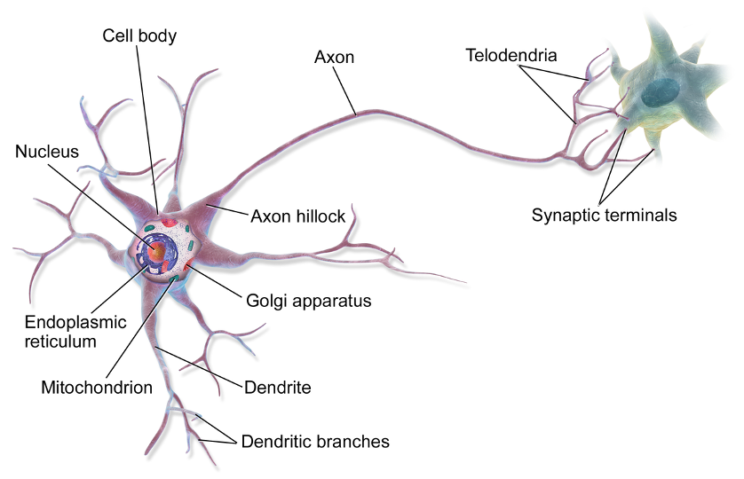
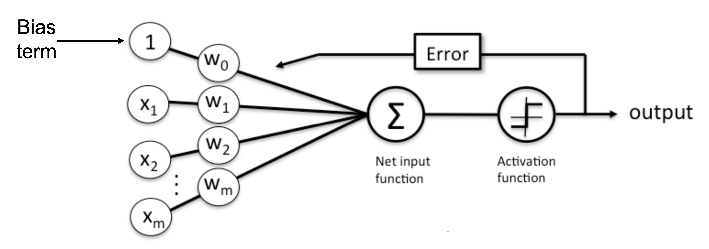
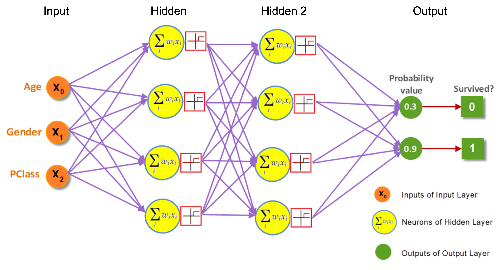

Chapter 5 - Ensemble machine learning, deep learning¶
2022 February 23

Texas Monthly, Music Monday: Uncovering The Mystery Of The King & Carter Jazzing Orchestra
Ensemble machine learning¶
“Ensemble machine learning methods use multiple learning algorithms to obtain better predictive performance than could be obtained from any of the constituent learning algorithms.” H2O.ai ensemble example
In this manner, stacking/SuperLearner ensembles are powerful tools because they:
Eliminates bias of single algorithm selection for framing a research problem.
Allows for comparison of multiple algorithms, and/or comparison of the same model but tuned in many different ways.
Utilizes a second-level algorithm that produces an ideal weighted prediction that is suitable for data of virtually all distributions and uses external cross-validation to prevent overfitting.
The below example utilizes the h2o package, and requires Java to be installed on your machine.
install Java: https://www.java.com/en/download/help/mac_install.html
h2o SuperLearner example: https://docs.h2o.ai/h2o/latest-stable/h2o-docs/data-science/stacked-ensembles.html
Check out some other tutorials:
Python mlens library: https://mlens.readthedocs.io/en/0.1.x/install/
Machine Learning Mastery: https://machinelearningmastery.com/super-learner-ensemble-in-python/
KDNuggets: https://www.kdnuggets.com/2018/02/introduction-python-ensembles.html/2#comments
The quintessential R guide:
Guide to SuperLearner: https://cran.r-project.org/web/packages/SuperLearner/vignettes/Guide-to-SuperLearner.html
Read the papers:
H2O SuperLearner ensemble¶
Use machine learning ensembles to detect whether or not (simulated) particle collisions produce the Higgs Boson particle or not. Learn more about the data: https://www.kaggle.com/c/higgs/overview
What is the Higgs Boson?¶
“The Higgs boson is the fundamental particle associated with the Higgs field, a field that gives mass to other fundamental particles such as electrons and quarks. A particle’s mass determines how much it resists changing its speed or position when it encounters a force. Not all fundamental particles have mass. The photon, which is the particle of light and carries the electromagnetic force, has no mass at all.” (https://www.energy.gov/science/doe-explainsthe-higgs-boson)

Install h2o and Java¶
# !pip install h2o
# Requires install of Java
# https://www.java.com/en/download/help/mac_install.html
Import¶
import h2o
from h2o.estimators.random_forest import H2ORandomForestEstimator
from h2o.estimators.gbm import H2OGradientBoostingEstimator
from h2o.estimators.glm import H2OGeneralizedLinearEstimator
from h2o.estimators.stackedensemble import H2OStackedEnsembleEstimator
from h2o.grid.grid_search import H2OGridSearch
from __future__ import print_function
# turn off progress bars
h2o.no_progress()
Initialize an h2o cluster¶
h2o.init(nthreads=-1, max_mem_size='2G')
Checking whether there is an H2O instance running at http://localhost:54321 .
connected.
Warning: Your H2O cluster version is too old (10 months and 18 days)!Please download and install the latest version from http://h2o.ai/download/
| H2O_cluster_uptime: | 45 mins 07 secs |
| H2O_cluster_timezone: | America/Los_Angeles |
| H2O_data_parsing_timezone: | UTC |
| H2O_cluster_version: | 3.34.0.1 |
| H2O_cluster_version_age: | 10 months and 18 days !!! |
| H2O_cluster_name: | H2O_from_python_evanmuzzall_6713ep |
| H2O_cluster_total_nodes: | 1 |
| H2O_cluster_free_memory: | 1.351 Gb |
| H2O_cluster_total_cores: | 16 |
| H2O_cluster_allowed_cores: | 16 |
| H2O_cluster_status: | locked, healthy |
| H2O_connection_url: | http://localhost:54321 |
| H2O_connection_proxy: | {"http": null, "https": null} |
| H2O_internal_security: | False |
| H2O_API_Extensions: | Amazon S3, XGBoost, Algos, AutoML, Core V3, TargetEncoder, Core V4 |
| Python_version: | 3.8.8 final |
Import a sample binary outcome train/test set into H2O¶
train = h2o.import_file("https://s3.amazonaws.com/erin-data/higgs/higgs_train_10k.csv")
test = h2o.import_file("https://s3.amazonaws.com/erin-data/higgs/higgs_test_5k.csv")
train
| response | x1 | x2 | x3 | x4 | x5 | x6 | x7 | x8 | x9 | x10 | x11 | x12 | x13 | x14 | x15 | x16 | x17 | x18 | x19 | x20 | x21 | x22 | x23 | x24 | x25 | x26 | x27 | x28 |
|---|---|---|---|---|---|---|---|---|---|---|---|---|---|---|---|---|---|---|---|---|---|---|---|---|---|---|---|---|
| 1 | 0.869293 | -0.635082 | 0.22569 | 0.32747 | -0.689993 | 0.754202 | -0.248573 | -1.09206 | 0 | 1.37499 | -0.653674 | 0.930349 | 1.10744 | 1.1389 | -1.5782 | -1.04699 | 0 | 0.65793 | -0.0104546 | -0.0457672 | 3.10196 | 1.35376 | 0.979563 | 0.978076 | 0.920005 | 0.721657 | 0.988751 | 0.876678 |
| 1 | 0.907542 | 0.329147 | 0.359412 | 1.49797 | -0.31301 | 1.09553 | -0.557525 | -1.58823 | 2.17308 | 0.812581 | -0.213642 | 1.27101 | 2.21487 | 0.499994 | -1.26143 | 0.732156 | 0 | 0.398701 | -1.13893 | -0.00081911 | 0 | 0.30222 | 0.833048 | 0.9857 | 0.978098 | 0.779732 | 0.992356 | 0.798343 |
| 1 | 0.798835 | 1.47064 | -1.63597 | 0.453773 | 0.425629 | 1.10487 | 1.28232 | 1.38166 | 0 | 0.851737 | 1.54066 | -0.81969 | 2.21487 | 0.99349 | 0.35608 | -0.208778 | 2.54822 | 1.25695 | 1.12885 | 0.900461 | 0 | 0.909753 | 1.10833 | 0.985692 | 0.951331 | 0.803252 | 0.865924 | 0.780118 |
| 0 | 1.34438 | -0.876626 | 0.935913 | 1.99205 | 0.882454 | 1.78607 | -1.64678 | -0.942383 | 0 | 2.42326 | -0.676016 | 0.736159 | 2.21487 | 1.29872 | -1.43074 | -0.364658 | 0 | 0.745313 | -0.678379 | -1.36036 | 0 | 0.946652 | 1.0287 | 0.998656 | 0.728281 | 0.8692 | 1.02674 | 0.957904 |
| 1 | 1.10501 | 0.321356 | 1.5224 | 0.882808 | -1.20535 | 0.681466 | -1.07046 | -0.921871 | 0 | 0.800872 | 1.02097 | 0.971407 | 2.21487 | 0.596761 | -0.350273 | 0.631194 | 0 | 0.479999 | -0.373566 | 0.113041 | 0 | 0.755856 | 1.36106 | 0.98661 | 0.838085 | 1.1333 | 0.872245 | 0.808487 |
| 0 | 1.59584 | -0.607811 | 0.00707492 | 1.81845 | -0.111906 | 0.84755 | -0.566437 | 1.58124 | 2.17308 | 0.755421 | 0.64311 | 1.42637 | 0 | 0.921661 | -1.19043 | -1.61559 | 0 | 0.651114 | -0.654227 | -1.27434 | 3.10196 | 0.823761 | 0.938191 | 0.971758 | 0.789176 | 0.430553 | 0.961357 | 0.957818 |
| 1 | 0.409391 | -1.88468 | -1.02729 | 1.67245 | -1.6046 | 1.33801 | 0.0554274 | 0.0134659 | 2.17308 | 0.509783 | -1.03834 | 0.707862 | 0 | 0.746918 | -0.358465 | -1.64665 | 0 | 0.367058 | 0.0694965 | 1.37713 | 3.10196 | 0.869418 | 1.22208 | 1.00063 | 0.545045 | 0.698653 | 0.977314 | 0.828786 |
| 1 | 0.933895 | 0.62913 | 0.527535 | 0.238033 | -0.966569 | 0.547811 | -0.0594392 | -1.70687 | 2.17308 | 0.941003 | -2.65373 | -0.15722 | 0 | 1.03037 | -0.175505 | 0.523021 | 2.54822 | 1.37355 | 1.29125 | -1.46745 | 0 | 0.901837 | 1.08367 | 0.979696 | 0.7833 | 0.849195 | 0.894356 | 0.774879 |
| 1 | 1.40514 | 0.536603 | 0.689554 | 1.17957 | -0.110061 | 3.2024 | -1.52696 | -1.57603 | 0 | 2.93154 | 0.567342 | -0.130033 | 2.21487 | 1.78712 | 0.899499 | 0.585151 | 2.54822 | 0.401865 | -0.151202 | 1.16349 | 0 | 1.66707 | 4.03927 | 1.17583 | 1.04535 | 1.54297 | 3.53483 | 2.74075 |
| 1 | 1.17657 | 0.104161 | 1.397 | 0.479721 | 0.265513 | 1.13556 | 1.53483 | -0.253291 | 0 | 1.02725 | 0.534316 | 1.18002 | 0 | 2.40566 | 0.0875568 | -0.976534 | 2.54822 | 1.25038 | 0.268541 | 0.530334 | 0 | 0.833175 | 0.773968 | 0.98575 | 1.1037 | 0.84914 | 0.937104 | 0.812364 |
print(train.shape)
print(test.shape)
(10000, 29)
(5000, 29)
Identify predictors and response¶
x = train.columns
y = "response"
x.remove(y)
For binary classification, response should be a factor¶
train[y] = train[y].asfactor()
test[y] = test[y].asfactor()
Number of CV folds (to generate level-one data for stacking)¶
nfolds = 5
How to stack¶
There are a few ways to assemble a list of models to stack together:
Train individual models and put them in a list
Train a grid of models
Train several grids of models
Note: All base models must have the same cross-validation folds and the cross-validated predicted values must be kept.
1. Generate a 2-model ensemble¶
Use three algorithms:
random forest
gradient boosted machine
lasso
TODO: add RF and GBM defining characteristics
TODO: show how changing hyperparamters randomly can lead to overfitting (specifically # trees)
Train and cross-validate a random forest¶
rf = H2ORandomForestEstimator(ntrees = 100,
nfolds = nfolds,
fold_assignment = 'Modulo',
keep_cross_validation_predictions = True,
seed = 1)
rf.train(x = x, y = y, training_frame = train)
Model Details
=============
H2ORandomForestEstimator : Distributed Random Forest
Model Key: DRF_model_python_1659483784037_6487
Model Summary:
| number_of_trees | number_of_internal_trees | model_size_in_bytes | min_depth | max_depth | mean_depth | min_leaves | max_leaves | mean_leaves | ||
|---|---|---|---|---|---|---|---|---|---|---|
| 0 | 100.0 | 100.0 | 1893923.0 | 20.0 | 20.0 | 20.0 | 1394.0 | 1632.0 | 1502.23 |
ModelMetricsBinomial: drf
** Reported on train data. **
MSE: 0.19950487132058212
RMSE: 0.446659681771908
LogLoss: 0.5827049508751073
Mean Per-Class Error: 0.30843686874008425
AUC: 0.7598007062584857
AUCPR: 0.7763300405428175
Gini: 0.5196014125169715
Confusion Matrix (Act/Pred) for max f1 @ threshold = 0.4104450374569011:
| 0 | 1 | Error | Rate | ||
|---|---|---|---|---|---|
| 0 | 0 | 2150.0 | 2555.0 | 0.543 | (2555.0/4705.0) |
| 1 | 1 | 716.0 | 4579.0 | 0.1352 | (716.0/5295.0) |
| 2 | Total | 2866.0 | 7134.0 | 0.3271 | (3271.0/10000.0) |
Maximum Metrics: Maximum metrics at their respective thresholds
| metric | threshold | value | idx | |
|---|---|---|---|---|
| 0 | max f1 | 0.410445 | 0.736825 | 260.0 |
| 1 | max f2 | 0.239052 | 0.855587 | 344.0 |
| 2 | max f0point5 | 0.555540 | 0.715899 | 181.0 |
| 3 | max accuracy | 0.520387 | 0.690300 | 200.0 |
| 4 | max precision | 0.999592 | 1.000000 | 0.0 |
| 5 | max recall | 0.095129 | 1.000000 | 386.0 |
| 6 | max specificity | 0.999592 | 1.000000 | 0.0 |
| 7 | max absolute_mcc | 0.555540 | 0.384066 | 181.0 |
| 8 | max min_per_class_accuracy | 0.525615 | 0.689896 | 197.0 |
| 9 | max mean_per_class_accuracy | 0.555540 | 0.691563 | 181.0 |
| 10 | max tns | 0.999592 | 4705.000000 | 0.0 |
| 11 | max fns | 0.999592 | 5294.000000 | 0.0 |
| 12 | max fps | 0.000000 | 4705.000000 | 399.0 |
| 13 | max tps | 0.095129 | 5295.000000 | 386.0 |
| 14 | max tnr | 0.999592 | 1.000000 | 0.0 |
| 15 | max fnr | 0.999592 | 0.999811 | 0.0 |
| 16 | max fpr | 0.000000 | 1.000000 | 399.0 |
| 17 | max tpr | 0.095129 | 1.000000 | 386.0 |
Gains/Lift Table: Avg response rate: 52.95 %, avg score: 52.89 %
| group | cumulative_data_fraction | lower_threshold | lift | cumulative_lift | response_rate | score | cumulative_response_rate | cumulative_score | capture_rate | cumulative_capture_rate | gain | cumulative_gain | kolmogorov_smirnov | |
|---|---|---|---|---|---|---|---|---|---|---|---|---|---|---|
| 0 | 1 | 0.0100 | 0.925816 | 1.794145 | 1.794145 | 0.950000 | 0.947710 | 0.950000 | 0.947710 | 0.017941 | 0.017941 | 79.414542 | 79.414542 | 0.016879 |
| 1 | 2 | 0.0200 | 0.896792 | 1.850803 | 1.822474 | 0.980000 | 0.909486 | 0.965000 | 0.928598 | 0.018508 | 0.036449 | 85.080264 | 82.247403 | 0.034962 |
| 2 | 3 | 0.0300 | 0.875029 | 1.813031 | 1.819326 | 0.960000 | 0.885540 | 0.963333 | 0.914245 | 0.018130 | 0.054580 | 81.303116 | 81.932641 | 0.052242 |
| 3 | 4 | 0.0400 | 0.857754 | 1.718602 | 1.794145 | 0.910000 | 0.866945 | 0.950000 | 0.902420 | 0.017186 | 0.071766 | 71.860246 | 79.414542 | 0.067515 |
| 4 | 5 | 0.0500 | 0.843810 | 1.680831 | 1.771483 | 0.890000 | 0.851600 | 0.938000 | 0.892256 | 0.016808 | 0.088574 | 68.083097 | 77.148253 | 0.081985 |
| 5 | 6 | 0.1000 | 0.788384 | 1.582625 | 1.677054 | 0.838000 | 0.814850 | 0.888000 | 0.853553 | 0.079131 | 0.167705 | 58.262512 | 67.705382 | 0.143901 |
| 6 | 7 | 0.1500 | 0.745567 | 1.571294 | 1.641800 | 0.832000 | 0.766710 | 0.869333 | 0.824605 | 0.078565 | 0.246270 | 57.129367 | 64.180044 | 0.204612 |
| 7 | 8 | 0.2000 | 0.704503 | 1.412653 | 1.584514 | 0.748000 | 0.724356 | 0.839000 | 0.799543 | 0.070633 | 0.316903 | 41.265345 | 58.451369 | 0.248465 |
| 8 | 9 | 0.3001 | 0.641026 | 1.352755 | 1.507209 | 0.716284 | 0.672193 | 0.798067 | 0.757065 | 0.135411 | 0.452314 | 35.275489 | 50.720927 | 0.323514 |
| 9 | 10 | 0.4000 | 0.584336 | 1.206116 | 1.432011 | 0.638639 | 0.611509 | 0.758250 | 0.720712 | 0.120491 | 0.572805 | 20.611641 | 43.201133 | 0.367278 |
| 10 | 11 | 0.5000 | 0.529812 | 1.046270 | 1.354863 | 0.554000 | 0.556784 | 0.717400 | 0.687926 | 0.104627 | 0.677432 | 4.627007 | 35.486308 | 0.377113 |
| 11 | 12 | 0.6000 | 0.474727 | 0.914070 | 1.281398 | 0.484000 | 0.503242 | 0.678500 | 0.657146 | 0.091407 | 0.768839 | -8.593012 | 28.139754 | 0.358849 |
| 12 | 13 | 0.7000 | 0.418589 | 0.857413 | 1.220828 | 0.454000 | 0.447953 | 0.646429 | 0.627261 | 0.085741 | 0.854580 | -14.258735 | 22.082827 | 0.328544 |
| 13 | 14 | 0.8000 | 0.353428 | 0.672332 | 1.152266 | 0.356000 | 0.386946 | 0.610125 | 0.597222 | 0.067233 | 0.921813 | -32.766761 | 15.226629 | 0.258901 |
| 14 | 15 | 0.9004 | 0.272727 | 0.504121 | 1.079994 | 0.266932 | 0.314339 | 0.571857 | 0.565678 | 0.050614 | 0.972427 | -49.587862 | 7.999424 | 0.153086 |
| 15 | 16 | 1.0000 | 0.000000 | 0.276839 | 1.000000 | 0.146586 | 0.196359 | 0.529500 | 0.528894 | 0.027573 | 1.000000 | -72.316082 | 0.000000 | 0.000000 |
ModelMetricsBinomial: drf
** Reported on cross-validation data. **
MSE: 0.1978311557213644
RMSE: 0.44478214411255806
LogLoss: 0.579741500688161
Mean Per-Class Error: 0.2998532893000535
AUC: 0.7686270909034348
AUCPR: 0.7856172822797098
Gini: 0.5372541818068697
Confusion Matrix (Act/Pred) for max f1 @ threshold = 0.42006199163332014:
| 0 | 1 | Error | Rate | ||
|---|---|---|---|---|---|
| 0 | 0 | 2190.0 | 2515.0 | 0.5345 | (2515.0/4705.0) |
| 1 | 1 | 681.0 | 4614.0 | 0.1286 | (681.0/5295.0) |
| 2 | Total | 2871.0 | 7129.0 | 0.3196 | (3196.0/10000.0) |
Maximum Metrics: Maximum metrics at their respective thresholds
| metric | threshold | value | idx | |
|---|---|---|---|---|
| 0 | max f1 | 0.420062 | 0.742756 | 267.0 |
| 1 | max f2 | 0.235011 | 0.855768 | 355.0 |
| 2 | max f0point5 | 0.560187 | 0.726168 | 186.0 |
| 3 | max accuracy | 0.523067 | 0.698300 | 208.0 |
| 4 | max precision | 0.977268 | 1.000000 | 0.0 |
| 5 | max recall | 0.130235 | 1.000000 | 385.0 |
| 6 | max specificity | 0.977268 | 1.000000 | 0.0 |
| 7 | max absolute_mcc | 0.560187 | 0.401916 | 186.0 |
| 8 | max min_per_class_accuracy | 0.523067 | 0.698017 | 208.0 |
| 9 | max mean_per_class_accuracy | 0.555878 | 0.700147 | 189.0 |
| 10 | max tns | 0.977268 | 4705.000000 | 0.0 |
| 11 | max fns | 0.977268 | 5294.000000 | 0.0 |
| 12 | max fps | 0.020000 | 4705.000000 | 399.0 |
| 13 | max tps | 0.130235 | 5295.000000 | 385.0 |
| 14 | max tnr | 0.977268 | 1.000000 | 0.0 |
| 15 | max fnr | 0.977268 | 0.999811 | 0.0 |
| 16 | max fpr | 0.020000 | 1.000000 | 399.0 |
| 17 | max tpr | 0.130235 | 1.000000 | 385.0 |
Gains/Lift Table: Avg response rate: 52.95 %, avg score: 52.85 %
| group | cumulative_data_fraction | lower_threshold | lift | cumulative_lift | response_rate | score | cumulative_response_rate | cumulative_score | capture_rate | cumulative_capture_rate | gain | cumulative_gain | kolmogorov_smirnov | |
|---|---|---|---|---|---|---|---|---|---|---|---|---|---|---|
| 0 | 1 | 0.0100 | 0.889002 | 1.813031 | 1.813031 | 0.960000 | 0.914104 | 0.960000 | 0.914104 | 0.018130 | 0.018130 | 81.303116 | 81.303116 | 0.017280 |
| 1 | 2 | 0.0200 | 0.866936 | 1.831917 | 1.822474 | 0.970000 | 0.877796 | 0.965000 | 0.895950 | 0.018319 | 0.036449 | 83.191690 | 82.247403 | 0.034962 |
| 2 | 3 | 0.0305 | 0.850000 | 1.780656 | 1.808078 | 0.942857 | 0.857113 | 0.957377 | 0.882580 | 0.018697 | 0.055146 | 78.065561 | 80.807752 | 0.052383 |
| 3 | 4 | 0.0400 | 0.836352 | 1.749416 | 1.794145 | 0.926316 | 0.843201 | 0.950000 | 0.873227 | 0.016619 | 0.071766 | 74.941603 | 79.414542 | 0.067515 |
| 4 | 5 | 0.0500 | 0.823457 | 1.718602 | 1.779037 | 0.910000 | 0.829764 | 0.942000 | 0.864535 | 0.017186 | 0.088952 | 71.860246 | 77.903683 | 0.082788 |
| 5 | 6 | 0.1010 | 0.770000 | 1.655280 | 1.716546 | 0.876471 | 0.793776 | 0.908911 | 0.828805 | 0.084419 | 0.173371 | 65.527968 | 71.654559 | 0.153817 |
| 6 | 7 | 0.1500 | 0.729441 | 1.518568 | 1.651873 | 0.804082 | 0.748726 | 0.874667 | 0.802646 | 0.074410 | 0.247781 | 51.856777 | 65.187284 | 0.207823 |
| 7 | 8 | 0.2000 | 0.694800 | 1.431539 | 1.596789 | 0.758000 | 0.711801 | 0.845500 | 0.779935 | 0.071577 | 0.319358 | 43.153919 | 59.678942 | 0.253683 |
| 8 | 9 | 0.3000 | 0.636224 | 1.371105 | 1.521561 | 0.726000 | 0.665173 | 0.805667 | 0.741681 | 0.137110 | 0.456468 | 37.110482 | 52.156122 | 0.332558 |
| 9 | 10 | 0.4011 | 0.580000 | 1.232897 | 1.448801 | 0.652819 | 0.607113 | 0.767140 | 0.707762 | 0.124646 | 0.581114 | 23.289706 | 44.880144 | 0.382602 |
| 10 | 11 | 0.5000 | 0.529246 | 1.050269 | 1.369972 | 0.556117 | 0.554347 | 0.725400 | 0.677416 | 0.103872 | 0.684986 | 5.026873 | 36.997167 | 0.393169 |
| 11 | 12 | 0.6001 | 0.479333 | 0.915043 | 1.294087 | 0.484515 | 0.503495 | 0.685219 | 0.648405 | 0.091596 | 0.776582 | -8.495659 | 29.408712 | 0.375094 |
| 12 | 13 | 0.7000 | 0.427236 | 0.846928 | 1.230271 | 0.448448 | 0.452868 | 0.651429 | 0.620499 | 0.084608 | 0.861190 | -15.307186 | 23.027115 | 0.342593 |
| 13 | 14 | 0.8000 | 0.364682 | 0.632672 | 1.155571 | 0.335000 | 0.395935 | 0.611875 | 0.592429 | 0.063267 | 0.924457 | -36.732767 | 15.557129 | 0.264521 |
| 14 | 15 | 0.9018 | 0.290000 | 0.480492 | 1.079365 | 0.254420 | 0.328383 | 0.571524 | 0.562622 | 0.048914 | 0.973371 | -51.950815 | 7.936472 | 0.152117 |
| 15 | 16 | 1.0000 | 0.020000 | 0.271170 | 1.000000 | 0.143585 | 0.215219 | 0.529500 | 0.528507 | 0.026629 | 1.000000 | -72.882999 | 0.000000 | 0.000000 |
Cross-Validation Metrics Summary:
| mean | sd | cv_1_valid | cv_2_valid | cv_3_valid | cv_4_valid | cv_5_valid | ||
|---|---|---|---|---|---|---|---|---|
| 0 | accuracy | 0.684700 | 0.009686 | 0.688000 | 0.683500 | 0.668500 | 0.691000 | 0.692500 |
| 1 | auc | 0.768961 | 0.005747 | 0.777448 | 0.764756 | 0.763700 | 0.766779 | 0.772118 |
| 2 | err | 0.315300 | 0.009686 | 0.312000 | 0.316500 | 0.331500 | 0.309000 | 0.307500 |
| 3 | err_count | 630.600000 | 19.372662 | 624.000000 | 633.000000 | 663.000000 | 618.000000 | 615.000000 |
| 4 | f0point5 | 0.686030 | 0.008300 | 0.687034 | 0.684970 | 0.677061 | 0.699269 | 0.681818 |
| 5 | f1 | 0.744774 | 0.007659 | 0.747164 | 0.753601 | 0.741520 | 0.748166 | 0.733420 |
| 6 | f2 | 0.814755 | 0.016714 | 0.818828 | 0.837515 | 0.819545 | 0.804416 | 0.793472 |
| 7 | lift_top_group | 1.815754 | 0.126244 | 1.897533 | 1.775701 | 1.760890 | 1.660517 | 1.984127 |
| 8 | logloss | 0.579742 | 0.004706 | 0.571577 | 0.581464 | 0.582822 | 0.582803 | 0.580041 |
| 9 | max_per_class_error | 0.524409 | 0.052263 | 0.520085 | 0.570968 | 0.580890 | 0.493450 | 0.456653 |
| 10 | mcc | 0.379194 | 0.021935 | 0.389069 | 0.384129 | 0.342742 | 0.379066 | 0.400963 |
| 11 | mean_per_class_accuracy | 0.672491 | 0.015187 | 0.677339 | 0.666853 | 0.650241 | 0.676707 | 0.691316 |
| 12 | mean_per_class_error | 0.327509 | 0.015187 | 0.322661 | 0.333147 | 0.349759 | 0.323293 | 0.308684 |
| 13 | mse | 0.197831 | 0.001922 | 0.194467 | 0.198626 | 0.199179 | 0.198811 | 0.198073 |
| 14 | pr_auc | 0.786175 | 0.008145 | 0.795368 | 0.780520 | 0.791291 | 0.788378 | 0.775318 |
| 15 | precision | 0.651826 | 0.011298 | 0.652051 | 0.645764 | 0.639973 | 0.670073 | 0.651270 |
| 16 | r2 | 0.205297 | 0.008929 | 0.219856 | 0.201582 | 0.198281 | 0.199106 | 0.207659 |
| 17 | recall | 0.869391 | 0.026604 | 0.874763 | 0.904673 | 0.881372 | 0.846863 | 0.839286 |
| 18 | rmse | 0.444778 | 0.002167 | 0.440985 | 0.445675 | 0.446295 | 0.445882 | 0.445053 |
| 19 | specificity | 0.475591 | 0.052263 | 0.479915 | 0.429032 | 0.419110 | 0.506550 | 0.543347 |
Scoring History:
| timestamp | duration | number_of_trees | training_rmse | training_logloss | training_auc | training_pr_auc | training_lift | training_classification_error | ||
|---|---|---|---|---|---|---|---|---|---|---|
| 0 | 2022-08-02 17:28:49 | 19.153 sec | 0.0 | NaN | NaN | NaN | NaN | NaN | NaN | |
| 1 | 2022-08-02 17:28:49 | 19.176 sec | 1.0 | 0.642818 | 14.048395 | 0.577384 | 0.589593 | 1.144218 | 0.464917 | |
| 2 | 2022-08-02 17:28:49 | 19.199 sec | 2.0 | 0.615404 | 11.895281 | 0.595767 | 0.598674 | 1.167648 | 0.470126 | |
| 3 | 2022-08-02 17:28:49 | 19.223 sec | 3.0 | 0.596109 | 10.322973 | 0.606984 | 0.606263 | 1.188141 | 0.471944 | |
| 4 | 2022-08-02 17:28:49 | 19.248 sec | 4.0 | 0.578952 | 8.963477 | 0.617051 | 0.613281 | 1.205225 | 0.473260 | |
| 5 | 2022-08-02 17:28:49 | 19.271 sec | 5.0 | 0.566757 | 7.823122 | 0.621447 | 0.619131 | 1.222342 | 0.472650 | |
| 6 | 2022-08-02 17:28:49 | 19.296 sec | 6.0 | 0.555494 | 6.782681 | 0.625539 | 0.623303 | 1.235544 | 0.472576 | |
| 7 | 2022-08-02 17:28:49 | 19.320 sec | 7.0 | 0.542668 | 5.762143 | 0.634190 | 0.632386 | 1.256193 | 0.470778 | |
| 8 | 2022-08-02 17:28:49 | 19.347 sec | 8.0 | 0.534223 | 5.001247 | 0.637938 | 0.634830 | 1.257749 | 0.470999 | |
| 9 | 2022-08-02 17:28:49 | 19.372 sec | 9.0 | 0.525930 | 4.327270 | 0.643458 | 0.638581 | 1.259426 | 0.416980 | |
| 10 | 2022-08-02 17:28:49 | 19.398 sec | 10.0 | 0.516709 | 3.691988 | 0.652861 | 0.649779 | 1.292382 | 0.416650 | |
| 11 | 2022-08-02 17:28:49 | 19.423 sec | 11.0 | 0.510283 | 3.222738 | 0.659091 | 0.656853 | 1.315126 | 0.417606 | |
| 12 | 2022-08-02 17:28:49 | 19.450 sec | 12.0 | 0.501990 | 2.723957 | 0.669423 | 0.667708 | 1.341061 | 0.422262 | |
| 13 | 2022-08-02 17:28:49 | 19.476 sec | 13.0 | 0.496251 | 2.349060 | 0.675311 | 0.675563 | 1.374979 | 0.405793 | |
| 14 | 2022-08-02 17:28:49 | 19.504 sec | 14.0 | 0.492259 | 2.050819 | 0.679020 | 0.680861 | 1.408270 | 0.405386 | |
| 15 | 2022-08-02 17:28:49 | 19.531 sec | 15.0 | 0.487936 | 1.795128 | 0.684347 | 0.686164 | 1.425637 | 0.404943 | |
| 16 | 2022-08-02 17:28:49 | 19.560 sec | 16.0 | 0.484170 | 1.579896 | 0.689326 | 0.694656 | 1.472602 | 0.384615 | |
| 17 | 2022-08-02 17:28:50 | 19.589 sec | 17.0 | 0.480754 | 1.424860 | 0.693815 | 0.699750 | 1.494407 | 0.400180 | |
| 18 | 2022-08-02 17:28:50 | 19.616 sec | 18.0 | 0.477989 | 1.318464 | 0.698239 | 0.703253 | 1.498109 | 0.389139 | |
| 19 | 2022-08-02 17:28:50 | 19.645 sec | 19.0 | 0.475932 | 1.215350 | 0.701065 | 0.707162 | 1.521093 | 0.391439 |
See the whole table with table.as_data_frame()
Variable Importances:
| variable | relative_importance | scaled_importance | percentage | |
|---|---|---|---|---|
| 0 | x26 | 15628.322266 | 1.000000 | 0.101301 |
| 1 | x28 | 9415.993164 | 0.602495 | 0.061034 |
| 2 | x27 | 9318.841797 | 0.596279 | 0.060404 |
| 3 | x6 | 7188.417969 | 0.459961 | 0.046595 |
| 4 | x25 | 7121.043945 | 0.455650 | 0.046158 |
| 5 | x23 | 7112.994141 | 0.455135 | 0.046106 |
| 6 | x4 | 6268.571289 | 0.401103 | 0.040632 |
| 7 | x1 | 5769.832031 | 0.369191 | 0.037400 |
| 8 | x10 | 5658.928223 | 0.362094 | 0.036681 |
| 9 | x2 | 5388.754395 | 0.344807 | 0.034929 |
| 10 | x7 | 5388.225098 | 0.344773 | 0.034926 |
| 11 | x19 | 5345.022461 | 0.342009 | 0.034646 |
| 12 | x12 | 5334.650391 | 0.341345 | 0.034579 |
| 13 | x5 | 5298.523438 | 0.339033 | 0.034345 |
| 14 | x20 | 5295.863281 | 0.338863 | 0.034327 |
| 15 | x16 | 5240.296387 | 0.335308 | 0.033967 |
| 16 | x3 | 5225.997070 | 0.334393 | 0.033874 |
| 17 | x8 | 5220.911621 | 0.334067 | 0.033842 |
| 18 | x15 | 5183.947266 | 0.331702 | 0.033602 |
| 19 | x11 | 5183.041504 | 0.331644 | 0.033596 |
See the whole table with table.as_data_frame()
Random forest test set performance¶
rf.model_performance(test)
ModelMetricsBinomial: drf
** Reported on test data. **
MSE: 0.19456237288967487
RMSE: 0.4410922498635346
LogLoss: 0.5723749503451226
Mean Per-Class Error: 0.2902132075244037
AUC: 0.7786910723119803
AUCPR: 0.8019489749908004
Gini: 0.5573821446239606
Confusion Matrix (Act/Pred) for max f1 @ threshold = 0.3900028567254543:
| 0 | 1 | Error | Rate | ||
|---|---|---|---|---|---|
| 0 | 0 | 957.0 | 1358.0 | 0.5866 | (1358.0/2315.0) |
| 1 | 1 | 280.0 | 2405.0 | 0.1043 | (280.0/2685.0) |
| 2 | Total | 1237.0 | 3763.0 | 0.3276 | (1638.0/5000.0) |
Maximum Metrics: Maximum metrics at their respective thresholds
| metric | threshold | value | idx | |
|---|---|---|---|---|
| 0 | max f1 | 0.390003 | 0.745968 | 280.0 |
| 1 | max f2 | 0.252355 | 0.861172 | 348.0 |
| 2 | max f0point5 | 0.545964 | 0.738321 | 184.0 |
| 3 | max accuracy | 0.503137 | 0.710400 | 211.0 |
| 4 | max precision | 0.976952 | 1.000000 | 0.0 |
| 5 | max recall | 0.145391 | 1.000000 | 382.0 |
| 6 | max specificity | 0.976952 | 1.000000 | 0.0 |
| 7 | max absolute_mcc | 0.515110 | 0.418565 | 204.0 |
| 8 | max min_per_class_accuracy | 0.513699 | 0.709125 | 205.0 |
| 9 | max mean_per_class_accuracy | 0.515110 | 0.709787 | 204.0 |
| 10 | max tns | 0.976952 | 2315.000000 | 0.0 |
| 11 | max fns | 0.976952 | 2684.000000 | 0.0 |
| 12 | max fps | 0.040096 | 2315.000000 | 399.0 |
| 13 | max tps | 0.145391 | 2685.000000 | 382.0 |
| 14 | max tnr | 0.976952 | 1.000000 | 0.0 |
| 15 | max fnr | 0.976952 | 0.999628 | 0.0 |
| 16 | max fpr | 0.040096 | 1.000000 | 399.0 |
| 17 | max tpr | 0.145391 | 1.000000 | 382.0 |
Gains/Lift Table: Avg response rate: 53.70 %, avg score: 52.30 %
| group | cumulative_data_fraction | lower_threshold | lift | cumulative_lift | response_rate | score | cumulative_response_rate | cumulative_score | capture_rate | cumulative_capture_rate | gain | cumulative_gain | kolmogorov_smirnov | |
|---|---|---|---|---|---|---|---|---|---|---|---|---|---|---|
| 0 | 1 | 0.0100 | 0.892945 | 1.824953 | 1.824953 | 0.980000 | 0.916686 | 0.980000 | 0.916686 | 0.018250 | 0.018250 | 82.495345 | 82.495345 | 0.017818 |
| 1 | 2 | 0.0200 | 0.869782 | 1.713222 | 1.769088 | 0.920000 | 0.881167 | 0.950000 | 0.898926 | 0.017132 | 0.035382 | 71.322160 | 76.908752 | 0.033222 |
| 2 | 3 | 0.0300 | 0.854788 | 1.713222 | 1.750466 | 0.920000 | 0.862835 | 0.940000 | 0.886896 | 0.017132 | 0.052514 | 71.322160 | 75.046555 | 0.048626 |
| 3 | 4 | 0.0400 | 0.840256 | 1.862197 | 1.778399 | 1.000000 | 0.847272 | 0.955000 | 0.876990 | 0.018622 | 0.071136 | 86.219739 | 77.839851 | 0.067248 |
| 4 | 5 | 0.0500 | 0.827591 | 1.787709 | 1.780261 | 0.960000 | 0.833668 | 0.956000 | 0.868325 | 0.017877 | 0.089013 | 78.770950 | 78.026071 | 0.084261 |
| 5 | 6 | 0.1000 | 0.771550 | 1.623836 | 1.702048 | 0.872000 | 0.797458 | 0.914000 | 0.832892 | 0.081192 | 0.170205 | 62.383613 | 70.204842 | 0.151630 |
| 6 | 7 | 0.1500 | 0.726679 | 1.646182 | 1.683426 | 0.884000 | 0.748252 | 0.904000 | 0.804678 | 0.082309 | 0.252514 | 64.618250 | 68.342644 | 0.221412 |
| 7 | 8 | 0.2012 | 0.690000 | 1.498487 | 1.636364 | 0.804688 | 0.706711 | 0.878728 | 0.779748 | 0.076723 | 0.329236 | 49.848696 | 63.636431 | 0.276537 |
| 8 | 9 | 0.3000 | 0.628621 | 1.368376 | 1.548107 | 0.734818 | 0.658471 | 0.831333 | 0.739808 | 0.135196 | 0.464432 | 36.837582 | 54.810677 | 0.355145 |
| 9 | 10 | 0.4000 | 0.572950 | 1.180633 | 1.456238 | 0.634000 | 0.600572 | 0.782000 | 0.704999 | 0.118063 | 0.582495 | 18.063315 | 45.623836 | 0.394158 |
| 10 | 11 | 0.5000 | 0.521722 | 1.083799 | 1.381750 | 0.582000 | 0.545898 | 0.742000 | 0.673179 | 0.108380 | 0.690875 | 8.379888 | 38.175047 | 0.412258 |
| 11 | 12 | 0.6000 | 0.469495 | 0.953445 | 1.310366 | 0.512000 | 0.494960 | 0.703667 | 0.643476 | 0.095345 | 0.786220 | -4.655493 | 31.036623 | 0.402202 |
| 12 | 13 | 0.7000 | 0.417658 | 0.670391 | 1.218941 | 0.360000 | 0.442290 | 0.654571 | 0.614735 | 0.067039 | 0.853259 | -32.960894 | 21.894121 | 0.331013 |
| 13 | 14 | 0.8010 | 0.360000 | 0.700629 | 1.153586 | 0.376238 | 0.389071 | 0.619476 | 0.586280 | 0.070764 | 0.924022 | -29.937128 | 15.358595 | 0.265707 |
| 14 | 15 | 0.9000 | 0.284405 | 0.511634 | 1.082971 | 0.274747 | 0.326935 | 0.581556 | 0.557752 | 0.050652 | 0.974674 | -48.836597 | 8.297124 | 0.161283 |
| 15 | 16 | 1.0000 | 0.040000 | 0.253259 | 1.000000 | 0.136000 | 0.209755 | 0.537000 | 0.522953 | 0.025326 | 1.000000 | -74.674115 | 0.000000 | 0.000000 |
Train and cross-validate a gradient boosted machine¶
gbm = H2OGradientBoostingEstimator(distribution = "bernoulli",
ntrees = 10,
max_depth = 3,
min_rows = 2,
learn_rate = 0.2,
nfolds = nfolds,
fold_assignment = "Modulo",
keep_cross_validation_predictions = True,
seed = 1)
gbm.train(x = x, y = y, training_frame = train)
Model Details
=============
H2OGradientBoostingEstimator : Gradient Boosting Machine
Model Key: GBM_model_python_1659483784037_7600
Model Summary:
| number_of_trees | number_of_internal_trees | model_size_in_bytes | min_depth | max_depth | mean_depth | min_leaves | max_leaves | mean_leaves | ||
|---|---|---|---|---|---|---|---|---|---|---|
| 0 | 10.0 | 10.0 | 1580.0 | 3.0 | 3.0 | 3.0 | 8.0 | 8.0 | 8.0 |
ModelMetricsBinomial: gbm
** Reported on train data. **
MSE: 0.20052170746266884
RMSE: 0.44779650228945383
LogLoss: 0.5879177464092424
Mean Per-Class Error: 0.29613223631461116
AUC: 0.7735466157694937
AUCPR: 0.7909110775032231
Gini: 0.5470932315389874
Confusion Matrix (Act/Pred) for max f1 @ threshold = 0.4424199442800167:
| 0 | 1 | Error | Rate | ||
|---|---|---|---|---|---|
| 0 | 0 | 2433.0 | 2272.0 | 0.4829 | (2272.0/4705.0) |
| 1 | 1 | 818.0 | 4477.0 | 0.1545 | (818.0/5295.0) |
| 2 | Total | 3251.0 | 6749.0 | 0.309 | (3090.0/10000.0) |
Maximum Metrics: Maximum metrics at their respective thresholds
| metric | threshold | value | idx | |
|---|---|---|---|---|
| 0 | max f1 | 0.442420 | 0.743441 | 244.0 |
| 1 | max f2 | 0.335831 | 0.858813 | 324.0 |
| 2 | max f0point5 | 0.542377 | 0.726119 | 166.0 |
| 3 | max accuracy | 0.507400 | 0.704200 | 192.0 |
| 4 | max precision | 0.790473 | 0.973684 | 3.0 |
| 5 | max recall | 0.158255 | 1.000000 | 394.0 |
| 6 | max specificity | 0.803933 | 0.999575 | 0.0 |
| 7 | max absolute_mcc | 0.519330 | 0.407039 | 183.0 |
| 8 | max min_per_class_accuracy | 0.513347 | 0.703507 | 187.0 |
| 9 | max mean_per_class_accuracy | 0.519330 | 0.703868 | 183.0 |
| 10 | max tns | 0.803933 | 4703.000000 | 0.0 |
| 11 | max fns | 0.803933 | 5245.000000 | 0.0 |
| 12 | max fps | 0.116664 | 4705.000000 | 399.0 |
| 13 | max tps | 0.158255 | 5295.000000 | 394.0 |
| 14 | max tnr | 0.803933 | 0.999575 | 0.0 |
| 15 | max fnr | 0.803933 | 0.990557 | 0.0 |
| 16 | max fpr | 0.116664 | 1.000000 | 399.0 |
| 17 | max tpr | 0.158255 | 1.000000 | 394.0 |
Gains/Lift Table: Avg response rate: 52.95 %, avg score: 52.93 %
| group | cumulative_data_fraction | lower_threshold | lift | cumulative_lift | response_rate | score | cumulative_response_rate | cumulative_score | capture_rate | cumulative_capture_rate | gain | cumulative_gain | kolmogorov_smirnov | |
|---|---|---|---|---|---|---|---|---|---|---|---|---|---|---|
| 0 | 1 | 0.0165 | 0.788097 | 1.831345 | 1.831345 | 0.969697 | 0.794128 | 0.969697 | 0.794128 | 0.030217 | 0.030217 | 83.134461 | 83.134461 | 0.029154 |
| 1 | 2 | 0.0309 | 0.779039 | 1.770538 | 1.803008 | 0.937500 | 0.780161 | 0.954693 | 0.787619 | 0.025496 | 0.055713 | 77.053824 | 80.300766 | 0.052737 |
| 2 | 3 | 0.0403 | 0.769898 | 1.727844 | 1.785476 | 0.914894 | 0.776514 | 0.945409 | 0.785029 | 0.016242 | 0.071955 | 72.784441 | 78.547579 | 0.067279 |
| 3 | 4 | 0.0520 | 0.766379 | 1.662591 | 1.757827 | 0.880342 | 0.767629 | 0.930769 | 0.781114 | 0.019452 | 0.091407 | 66.259090 | 75.782669 | 0.083756 |
| 4 | 5 | 0.1019 | 0.733553 | 1.680415 | 1.719918 | 0.889780 | 0.746516 | 0.910697 | 0.764171 | 0.083853 | 0.175260 | 68.041465 | 71.991834 | 0.155919 |
| 5 | 6 | 0.1501 | 0.703064 | 1.586872 | 1.677195 | 0.840249 | 0.720131 | 0.888075 | 0.750029 | 0.076487 | 0.251747 | 58.687245 | 67.719474 | 0.216040 |
| 6 | 7 | 0.2100 | 0.672701 | 1.475547 | 1.619677 | 0.781302 | 0.681960 | 0.857619 | 0.730613 | 0.088385 | 0.340132 | 47.554706 | 61.967714 | 0.276583 |
| 7 | 8 | 0.3003 | 0.631813 | 1.294604 | 1.521928 | 0.685493 | 0.653431 | 0.805861 | 0.707405 | 0.116903 | 0.457035 | 29.460397 | 52.192787 | 0.333124 |
| 8 | 9 | 0.4003 | 0.582373 | 1.242682 | 1.452169 | 0.658000 | 0.607055 | 0.768923 | 0.682336 | 0.124268 | 0.581303 | 24.268178 | 45.216866 | 0.384704 |
| 9 | 10 | 0.5000 | 0.519662 | 1.102458 | 1.382436 | 0.583751 | 0.552458 | 0.732000 | 0.656438 | 0.109915 | 0.691218 | 10.245751 | 38.243626 | 0.406415 |
| 10 | 11 | 0.6000 | 0.470374 | 0.906516 | 1.303116 | 0.480000 | 0.494559 | 0.690000 | 0.629458 | 0.090652 | 0.781870 | -9.348442 | 30.311615 | 0.386546 |
| 11 | 12 | 0.7004 | 0.436366 | 0.795684 | 1.230377 | 0.421315 | 0.451070 | 0.651485 | 0.603887 | 0.079887 | 0.861756 | -20.431588 | 23.037746 | 0.342947 |
| 12 | 13 | 0.8000 | 0.408689 | 0.584017 | 1.149906 | 0.309237 | 0.422132 | 0.608875 | 0.581258 | 0.058168 | 0.919924 | -41.598310 | 14.990557 | 0.254887 |
| 13 | 14 | 0.9009 | 0.350489 | 0.580236 | 1.086103 | 0.307235 | 0.385621 | 0.575092 | 0.559347 | 0.058546 | 0.978470 | -41.976414 | 8.610307 | 0.164868 |
| 14 | 15 | 1.0000 | 0.116664 | 0.217253 | 1.000000 | 0.115035 | 0.256620 | 0.529500 | 0.529347 | 0.021530 | 1.000000 | -78.274728 | 0.000000 | 0.000000 |
ModelMetricsBinomial: gbm
** Reported on cross-validation data. **
MSE: 0.20591759601729728
RMSE: 0.4537814408030559
LogLoss: 0.5996635025616064
Mean Per-Class Error: 0.3109957762972908
AUC: 0.752800639024444
AUCPR: 0.7705701530928649
Gini: 0.5056012780488881
Confusion Matrix (Act/Pred) for max f1 @ threshold = 0.4159392211190996:
| 0 | 1 | Error | Rate | ||
|---|---|---|---|---|---|
| 0 | 0 | 1696.0 | 3009.0 | 0.6395 | (3009.0/4705.0) |
| 1 | 1 | 538.0 | 4757.0 | 0.1016 | (538.0/5295.0) |
| 2 | Total | 2234.0 | 7766.0 | 0.3547 | (3547.0/10000.0) |
Maximum Metrics: Maximum metrics at their respective thresholds
| metric | threshold | value | idx | |
|---|---|---|---|---|
| 0 | max f1 | 0.415939 | 0.728428 | 268.0 |
| 1 | max f2 | 0.279109 | 0.855982 | 346.0 |
| 2 | max f0point5 | 0.561962 | 0.711702 | 154.0 |
| 3 | max accuracy | 0.517902 | 0.688800 | 186.0 |
| 4 | max precision | 0.835804 | 1.000000 | 0.0 |
| 5 | max recall | 0.158348 | 1.000000 | 392.0 |
| 6 | max specificity | 0.835804 | 1.000000 | 0.0 |
| 7 | max absolute_mcc | 0.517902 | 0.377372 | 186.0 |
| 8 | max min_per_class_accuracy | 0.515693 | 0.687354 | 188.0 |
| 9 | max mean_per_class_accuracy | 0.519427 | 0.689004 | 185.0 |
| 10 | max tns | 0.835804 | 4705.000000 | 0.0 |
| 11 | max fns | 0.835804 | 5287.000000 | 0.0 |
| 12 | max fps | 0.098410 | 4705.000000 | 399.0 |
| 13 | max tps | 0.158348 | 5295.000000 | 392.0 |
| 14 | max tnr | 0.835804 | 1.000000 | 0.0 |
| 15 | max fnr | 0.835804 | 0.998489 | 0.0 |
| 16 | max fpr | 0.098410 | 1.000000 | 399.0 |
| 17 | max tpr | 0.158348 | 1.000000 | 392.0 |
Gains/Lift Table: Avg response rate: 52.95 %, avg score: 52.91 %
| group | cumulative_data_fraction | lower_threshold | lift | cumulative_lift | response_rate | score | cumulative_response_rate | cumulative_score | capture_rate | cumulative_capture_rate | gain | cumulative_gain | kolmogorov_smirnov | |
|---|---|---|---|---|---|---|---|---|---|---|---|---|---|---|
| 0 | 1 | 0.0101 | 0.789519 | 1.776382 | 1.776382 | 0.940594 | 0.800149 | 0.940594 | 0.800149 | 0.017941 | 0.017941 | 77.638160 | 77.638160 | 0.016666 |
| 1 | 2 | 0.0204 | 0.781367 | 1.815231 | 1.795997 | 0.961165 | 0.785390 | 0.950980 | 0.792698 | 0.018697 | 0.036638 | 81.523144 | 79.599696 | 0.034513 |
| 2 | 3 | 0.0335 | 0.778060 | 1.715575 | 1.764548 | 0.908397 | 0.779096 | 0.934328 | 0.787379 | 0.022474 | 0.059112 | 71.557497 | 76.454836 | 0.054436 |
| 3 | 4 | 0.0407 | 0.771218 | 1.678733 | 1.749367 | 0.888889 | 0.774200 | 0.926290 | 0.785047 | 0.012087 | 0.071199 | 67.873256 | 74.936719 | 0.064823 |
| 4 | 5 | 0.0523 | 0.764063 | 1.693204 | 1.736910 | 0.896552 | 0.766315 | 0.919694 | 0.780893 | 0.019641 | 0.090840 | 69.320439 | 73.691043 | 0.081914 |
| 5 | 6 | 0.1010 | 0.729840 | 1.609360 | 1.675408 | 0.852156 | 0.745647 | 0.887129 | 0.763898 | 0.078376 | 0.169216 | 60.935988 | 67.540833 | 0.144987 |
| 6 | 7 | 0.1501 | 0.699633 | 1.565478 | 1.639448 | 0.828921 | 0.716835 | 0.868088 | 0.748503 | 0.076865 | 0.246081 | 56.547794 | 63.944843 | 0.203998 |
| 7 | 8 | 0.2000 | 0.675508 | 1.426839 | 1.586402 | 0.755511 | 0.686070 | 0.840000 | 0.732926 | 0.071199 | 0.317280 | 42.683857 | 58.640227 | 0.249268 |
| 8 | 9 | 0.3000 | 0.628903 | 1.318225 | 1.497010 | 0.698000 | 0.649476 | 0.792667 | 0.705109 | 0.131822 | 0.449103 | 31.822474 | 49.700976 | 0.316903 |
| 9 | 10 | 0.4000 | 0.579228 | 1.218130 | 1.427290 | 0.645000 | 0.605317 | 0.755750 | 0.680161 | 0.121813 | 0.570916 | 21.813031 | 42.728990 | 0.363265 |
| 10 | 11 | 0.5000 | 0.520964 | 1.059490 | 1.353730 | 0.561000 | 0.550914 | 0.716800 | 0.654312 | 0.105949 | 0.676865 | 5.949008 | 35.372993 | 0.375909 |
| 11 | 12 | 0.6000 | 0.470755 | 0.900850 | 1.278250 | 0.477000 | 0.494393 | 0.676833 | 0.627659 | 0.090085 | 0.766950 | -9.915014 | 27.824992 | 0.354835 |
| 12 | 13 | 0.7009 | 0.438080 | 0.758050 | 1.203363 | 0.401388 | 0.452376 | 0.637181 | 0.602425 | 0.076487 | 0.843437 | -24.194993 | 20.336311 | 0.302948 |
| 13 | 14 | 0.8003 | 0.407245 | 0.714390 | 1.142631 | 0.378270 | 0.423648 | 0.605023 | 0.580221 | 0.071010 | 0.914448 | -28.560979 | 14.263100 | 0.242609 |
| 14 | 15 | 0.9001 | 0.350168 | 0.580954 | 1.080354 | 0.307615 | 0.382479 | 0.572048 | 0.558296 | 0.057979 | 0.972427 | -41.904583 | 8.035420 | 0.153723 |
| 15 | 16 | 1.0000 | 0.098410 | 0.276008 | 1.000000 | 0.146146 | 0.265874 | 0.529500 | 0.529083 | 0.027573 | 1.000000 | -72.399217 | 0.000000 | 0.000000 |
Cross-Validation Metrics Summary:
| mean | sd | cv_1_valid | cv_2_valid | cv_3_valid | cv_4_valid | cv_5_valid | ||
|---|---|---|---|---|---|---|---|---|
| 0 | accuracy | 0.662000 | 0.011028 | 0.660500 | 0.659000 | 0.647500 | 0.665000 | 0.678000 |
| 1 | auc | 0.753708 | 0.008455 | 0.767336 | 0.754202 | 0.749615 | 0.744636 | 0.752753 |
| 2 | err | 0.338000 | 0.011028 | 0.339500 | 0.341000 | 0.352500 | 0.335000 | 0.322000 |
| 3 | err_count | 676.000000 | 22.056746 | 679.000000 | 682.000000 | 705.000000 | 670.000000 | 644.000000 |
| 4 | f0point5 | 0.667733 | 0.006292 | 0.664405 | 0.665501 | 0.660570 | 0.676335 | 0.671854 |
| 5 | f1 | 0.732593 | 0.011290 | 0.734662 | 0.743802 | 0.733056 | 0.737666 | 0.713778 |
| 6 | f2 | 0.812088 | 0.030635 | 0.821535 | 0.842984 | 0.823409 | 0.811230 | 0.761282 |
| 7 | lift_top_group | 1.770414 | 0.119520 | 1.897533 | 1.715529 | 1.677038 | 1.660517 | 1.901455 |
| 8 | logloss | 0.599664 | 0.005876 | 0.590319 | 0.597491 | 0.603376 | 0.604522 | 0.602610 |
| 9 | max_per_class_error | 0.581695 | 0.083577 | 0.597252 | 0.647312 | 0.644951 | 0.576419 | 0.442540 |
| 10 | mcc | 0.336792 | 0.022258 | 0.340809 | 0.343997 | 0.303925 | 0.330306 | 0.364922 |
| 11 | mean_per_class_accuracy | 0.647136 | 0.018742 | 0.647294 | 0.638961 | 0.626088 | 0.646292 | 0.677043 |
| 12 | mean_per_class_error | 0.352864 | 0.018742 | 0.352705 | 0.361039 | 0.373912 | 0.353708 | 0.322957 |
| 13 | mse | 0.205918 | 0.002593 | 0.201783 | 0.204980 | 0.207443 | 0.208073 | 0.207309 |
| 14 | pr_auc | 0.771801 | 0.013353 | 0.792843 | 0.772931 | 0.772372 | 0.762701 | 0.758159 |
| 15 | precision | 0.630703 | 0.012138 | 0.624585 | 0.621859 | 0.619718 | 0.640816 | 0.646538 |
| 16 | r2 | 0.172814 | 0.011294 | 0.190509 | 0.176042 | 0.165018 | 0.161792 | 0.170710 |
| 17 | recall | 0.875966 | 0.048658 | 0.891841 | 0.925234 | 0.897127 | 0.869004 | 0.796627 |
| 18 | rmse | 0.453774 | 0.002864 | 0.449202 | 0.452747 | 0.455459 | 0.456151 | 0.455312 |
| 19 | specificity | 0.418305 | 0.083577 | 0.402748 | 0.352688 | 0.355049 | 0.423581 | 0.557460 |
Scoring History:
| timestamp | duration | number_of_trees | training_rmse | training_logloss | training_auc | training_pr_auc | training_lift | training_classification_error | ||
|---|---|---|---|---|---|---|---|---|---|---|
| 0 | 2022-08-02 17:28:54 | 0.540 sec | 0.0 | 0.499129 | 0.691406 | 0.500000 | 0.529500 | 1.000000 | 0.4705 | |
| 1 | 2022-08-02 17:28:54 | 0.546 sec | 1.0 | 0.488236 | 0.669779 | 0.689191 | 0.674970 | 1.340835 | 0.3927 | |
| 2 | 2022-08-02 17:28:54 | 0.552 sec | 2.0 | 0.479807 | 0.653146 | 0.719111 | 0.725388 | 1.545030 | 0.3958 | |
| 3 | 2022-08-02 17:28:54 | 0.557 sec | 3.0 | 0.473698 | 0.641037 | 0.724650 | 0.731284 | 1.569032 | 0.3933 | |
| 4 | 2022-08-02 17:28:54 | 0.563 sec | 4.0 | 0.467046 | 0.627816 | 0.746638 | 0.760063 | 1.683844 | 0.3692 | |
| 5 | 2022-08-02 17:28:54 | 0.569 sec | 5.0 | 0.462994 | 0.619629 | 0.750899 | 0.766012 | 1.696473 | 0.3404 | |
| 6 | 2022-08-02 17:28:54 | 0.575 sec | 6.0 | 0.458301 | 0.609973 | 0.756603 | 0.772386 | 1.733566 | 0.3515 | |
| 7 | 2022-08-02 17:28:54 | 0.583 sec | 7.0 | 0.455569 | 0.604192 | 0.758101 | 0.773795 | 1.748075 | 0.3512 | |
| 8 | 2022-08-02 17:28:54 | 0.592 sec | 8.0 | 0.452777 | 0.598335 | 0.763715 | 0.778986 | 1.754413 | 0.3180 | |
| 9 | 2022-08-02 17:28:54 | 0.602 sec | 9.0 | 0.449743 | 0.591929 | 0.768491 | 0.784821 | 1.776659 | 0.3207 | |
| 10 | 2022-08-02 17:28:54 | 0.612 sec | 10.0 | 0.447797 | 0.587918 | 0.773547 | 0.790911 | 1.831345 | 0.3090 |
Variable Importances:
| variable | relative_importance | scaled_importance | percentage | |
|---|---|---|---|---|
| 0 | x26 | 565.332336 | 1.000000 | 0.410859 |
| 1 | x28 | 204.503998 | 0.361741 | 0.148625 |
| 2 | x27 | 189.230789 | 0.334725 | 0.137525 |
| 3 | x23 | 124.527618 | 0.220273 | 0.090501 |
| 4 | x6 | 121.551117 | 0.215008 | 0.088338 |
| 5 | x25 | 99.598267 | 0.176176 | 0.072384 |
| 6 | x4 | 44.359753 | 0.078467 | 0.032239 |
| 7 | x10 | 18.008587 | 0.031855 | 0.013088 |
| 8 | x22 | 3.660778 | 0.006475 | 0.002660 |
| 9 | x18 | 3.097153 | 0.005478 | 0.002251 |
| 10 | x5 | 2.104541 | 0.003723 | 0.001529 |
| 11 | x1 | 0.000000 | 0.000000 | 0.000000 |
| 12 | x2 | 0.000000 | 0.000000 | 0.000000 |
| 13 | x3 | 0.000000 | 0.000000 | 0.000000 |
| 14 | x7 | 0.000000 | 0.000000 | 0.000000 |
| 15 | x8 | 0.000000 | 0.000000 | 0.000000 |
| 16 | x9 | 0.000000 | 0.000000 | 0.000000 |
| 17 | x11 | 0.000000 | 0.000000 | 0.000000 |
| 18 | x12 | 0.000000 | 0.000000 | 0.000000 |
| 19 | x13 | 0.000000 | 0.000000 | 0.000000 |
See the whole table with table.as_data_frame()
Gradient boosted machine test set performance¶
gbm.model_performance(test)
ModelMetricsBinomial: gbm
** Reported on test data. **
MSE: 0.20579980230216896
RMSE: 0.453651630992515
LogLoss: 0.5991607617229083
Mean Per-Class Error: 0.3132779098342524
AUC: 0.7522686229794354
AUCPR: 0.7766705936284869
Gini: 0.5045372459588708
Confusion Matrix (Act/Pred) for max f1 @ threshold = 0.42008076282776335:
| 0 | 1 | Error | Rate | ||
|---|---|---|---|---|---|
| 0 | 0 | 948.0 | 1367.0 | 0.5905 | (1367.0/2315.0) |
| 1 | 1 | 325.0 | 2360.0 | 0.121 | (325.0/2685.0) |
| 2 | Total | 1273.0 | 3727.0 | 0.3384 | (1692.0/5000.0) |
Maximum Metrics: Maximum metrics at their respective thresholds
| metric | threshold | value | idx | |
|---|---|---|---|---|
| 0 | max f1 | 0.420081 | 0.736120 | 265.0 |
| 1 | max f2 | 0.271036 | 0.859410 | 354.0 |
| 2 | max f0point5 | 0.544346 | 0.716075 | 160.0 |
| 3 | max accuracy | 0.484325 | 0.682800 | 209.0 |
| 4 | max precision | 0.788080 | 0.977778 | 4.0 |
| 5 | max recall | 0.143335 | 1.000000 | 396.0 |
| 6 | max specificity | 0.803916 | 0.999568 | 0.0 |
| 7 | max absolute_mcc | 0.544346 | 0.374728 | 160.0 |
| 8 | max min_per_class_accuracy | 0.506104 | 0.676890 | 192.0 |
| 9 | max mean_per_class_accuracy | 0.544346 | 0.686722 | 160.0 |
| 10 | max tns | 0.803916 | 2314.000000 | 0.0 |
| 11 | max fns | 0.803916 | 2663.000000 | 0.0 |
| 12 | max fps | 0.116664 | 2315.000000 | 399.0 |
| 13 | max tps | 0.143335 | 2685.000000 | 396.0 |
| 14 | max tnr | 0.803916 | 0.999568 | 0.0 |
| 15 | max fnr | 0.803916 | 0.991806 | 0.0 |
| 16 | max fpr | 0.116664 | 1.000000 | 399.0 |
| 17 | max tpr | 0.143335 | 1.000000 | 396.0 |
Gains/Lift Table: Avg response rate: 53.70 %, avg score: 52.40 %
| group | cumulative_data_fraction | lower_threshold | lift | cumulative_lift | response_rate | score | cumulative_response_rate | cumulative_score | capture_rate | cumulative_capture_rate | gain | cumulative_gain | kolmogorov_smirnov | |
|---|---|---|---|---|---|---|---|---|---|---|---|---|---|---|
| 0 | 1 | 0.0178 | 0.788097 | 1.820350 | 1.820350 | 0.977528 | 0.793217 | 0.977528 | 0.793217 | 0.032402 | 0.032402 | 82.035026 | 82.035026 | 0.031538 |
| 1 | 2 | 0.0316 | 0.779039 | 1.700267 | 1.767909 | 0.913043 | 0.779782 | 0.949367 | 0.787350 | 0.023464 | 0.055866 | 70.026718 | 76.790892 | 0.052410 |
| 2 | 3 | 0.0406 | 0.771638 | 1.779433 | 1.770464 | 0.955556 | 0.776606 | 0.950739 | 0.784968 | 0.016015 | 0.071881 | 77.943306 | 77.046353 | 0.067561 |
| 3 | 4 | 0.0532 | 0.766379 | 1.507493 | 1.708181 | 0.809524 | 0.767939 | 0.917293 | 0.780935 | 0.018994 | 0.090875 | 50.749313 | 70.818107 | 0.081372 |
| 4 | 5 | 0.1000 | 0.728488 | 1.639370 | 1.675978 | 0.880342 | 0.745772 | 0.900000 | 0.764479 | 0.076723 | 0.167598 | 63.937035 | 67.597765 | 0.145999 |
| 5 | 6 | 0.1502 | 0.692784 | 1.468984 | 1.606796 | 0.788845 | 0.713905 | 0.862850 | 0.747576 | 0.073743 | 0.241341 | 46.898440 | 60.679615 | 0.196848 |
| 6 | 7 | 0.2014 | 0.670097 | 1.513035 | 1.582960 | 0.812500 | 0.676769 | 0.850050 | 0.729575 | 0.077467 | 0.318808 | 51.303538 | 58.296025 | 0.253581 |
| 7 | 8 | 0.3022 | 0.624524 | 1.296887 | 1.487540 | 0.696429 | 0.647864 | 0.798809 | 0.702320 | 0.130726 | 0.449534 | 29.688747 | 48.753955 | 0.318217 |
| 8 | 9 | 0.4002 | 0.571753 | 1.189526 | 1.414563 | 0.638776 | 0.598000 | 0.759620 | 0.676774 | 0.116574 | 0.566108 | 18.952609 | 41.456274 | 0.358333 |
| 9 | 10 | 0.5002 | 0.508286 | 1.027933 | 1.337268 | 0.552000 | 0.540824 | 0.718113 | 0.649595 | 0.102793 | 0.668901 | 2.793296 | 33.726770 | 0.364366 |
| 10 | 11 | 0.6000 | 0.462089 | 0.914305 | 1.266915 | 0.490982 | 0.486185 | 0.680333 | 0.622415 | 0.091248 | 0.760149 | -8.569467 | 26.691496 | 0.345894 |
| 11 | 12 | 0.7000 | 0.432698 | 0.849162 | 1.207236 | 0.456000 | 0.445603 | 0.648286 | 0.597156 | 0.084916 | 0.845065 | -15.083799 | 20.723597 | 0.313316 |
| 12 | 13 | 0.8022 | 0.405301 | 0.645027 | 1.135611 | 0.346380 | 0.419238 | 0.609823 | 0.574489 | 0.065922 | 0.910987 | -35.497272 | 13.561078 | 0.234961 |
| 13 | 14 | 0.9000 | 0.346606 | 0.590267 | 1.076350 | 0.316973 | 0.382333 | 0.578000 | 0.553608 | 0.057728 | 0.968715 | -40.973293 | 7.635009 | 0.148413 |
| 14 | 15 | 1.0000 | 0.116664 | 0.312849 | 1.000000 | 0.168000 | 0.257595 | 0.537000 | 0.524007 | 0.031285 | 1.000000 | -68.715084 | 0.000000 | 0.000000 |
3. Train a stacked ensemble using the GBM and RF above¶
What’s going on here - anything suspicious?
ensemble = H2OStackedEnsembleEstimator(model_id = "my_ensemble_binomial",
base_models = [rf, gbm])
ensemble.train(x = x, y = y, training_frame = train)
Model Details
=============
H2OStackedEnsembleEstimator : Stacked Ensemble
Model Key: my_ensemble_binomial
No model summary for this model
ModelMetricsBinomialGLM: stackedensemble
** Reported on train data. **
MSE: 0.034414533979938884
RMSE: 0.1855115467563647
LogLoss: 0.18617000727747787
Null degrees of freedom: 9999
Residual degrees of freedom: 9997
Null deviance: 13828.113387424342
Residual deviance: 3723.4001455495572
AIC: 3729.4001455495572
AUC: 0.9999900453478558
AUCPR: 0.9999911890971335
Gini: 0.9999800906957117
Confusion Matrix (Act/Pred) for max f1 @ threshold = 0.4952892042214926:
| 0 | 1 | Error | Rate | ||
|---|---|---|---|---|---|
| 0 | 0 | 4692.0 | 13.0 | 0.0028 | (13.0/4705.0) |
| 1 | 1 | 3.0 | 5292.0 | 0.0006 | (3.0/5295.0) |
| 2 | Total | 4695.0 | 5305.0 | 0.0016 | (16.0/10000.0) |
Maximum Metrics: Maximum metrics at their respective thresholds
| metric | threshold | value | idx | |
|---|---|---|---|---|
| 0 | max f1 | 0.495289 | 0.998491 | 200.0 |
| 1 | max f2 | 0.495289 | 0.999056 | 200.0 |
| 2 | max f0point5 | 0.550520 | 0.998978 | 192.0 |
| 3 | max accuracy | 0.512894 | 0.998400 | 198.0 |
| 4 | max precision | 0.947625 | 1.000000 | 0.0 |
| 5 | max recall | 0.432910 | 1.000000 | 211.0 |
| 6 | max specificity | 0.947625 | 1.000000 | 0.0 |
| 7 | max absolute_mcc | 0.495289 | 0.996790 | 200.0 |
| 8 | max min_per_class_accuracy | 0.512894 | 0.998300 | 198.0 |
| 9 | max mean_per_class_accuracy | 0.512894 | 0.998394 | 198.0 |
| 10 | max tns | 0.947625 | 4705.000000 | 0.0 |
| 11 | max fns | 0.947625 | 5283.000000 | 0.0 |
| 12 | max fps | 0.040123 | 4705.000000 | 399.0 |
| 13 | max tps | 0.432910 | 5295.000000 | 211.0 |
| 14 | max tnr | 0.947625 | 1.000000 | 0.0 |
| 15 | max fnr | 0.947625 | 0.997734 | 0.0 |
| 16 | max fpr | 0.040123 | 1.000000 | 399.0 |
| 17 | max tpr | 0.432910 | 1.000000 | 211.0 |
Gains/Lift Table: Avg response rate: 52.95 %, avg score: 52.69 %
| group | cumulative_data_fraction | lower_threshold | lift | cumulative_lift | response_rate | score | cumulative_response_rate | cumulative_score | capture_rate | cumulative_capture_rate | gain | cumulative_gain | kolmogorov_smirnov | |
|---|---|---|---|---|---|---|---|---|---|---|---|---|---|---|
| 0 | 1 | 0.01 | 0.939745 | 1.888574 | 1.888574 | 1.000 | 0.943046 | 1.000000 | 0.943046 | 0.018886 | 0.018886 | 88.857413 | 88.857413 | 0.018886 |
| 1 | 2 | 0.02 | 0.935499 | 1.888574 | 1.888574 | 1.000 | 0.937644 | 1.000000 | 0.940345 | 0.018886 | 0.037771 | 88.857413 | 88.857413 | 0.037771 |
| 2 | 3 | 0.03 | 0.932326 | 1.888574 | 1.888574 | 1.000 | 0.933926 | 1.000000 | 0.938205 | 0.018886 | 0.056657 | 88.857413 | 88.857413 | 0.056657 |
| 3 | 4 | 0.04 | 0.929278 | 1.888574 | 1.888574 | 1.000 | 0.930792 | 1.000000 | 0.936352 | 0.018886 | 0.075543 | 88.857413 | 88.857413 | 0.075543 |
| 4 | 5 | 0.05 | 0.926211 | 1.888574 | 1.888574 | 1.000 | 0.927677 | 1.000000 | 0.934617 | 0.018886 | 0.094429 | 88.857413 | 88.857413 | 0.094429 |
| 5 | 6 | 0.10 | 0.912796 | 1.888574 | 1.888574 | 1.000 | 0.919384 | 1.000000 | 0.927000 | 0.094429 | 0.188857 | 88.857413 | 88.857413 | 0.188857 |
| 6 | 7 | 0.15 | 0.899271 | 1.888574 | 1.888574 | 1.000 | 0.905914 | 1.000000 | 0.919971 | 0.094429 | 0.283286 | 88.857413 | 88.857413 | 0.283286 |
| 7 | 8 | 0.20 | 0.883838 | 1.888574 | 1.888574 | 1.000 | 0.891593 | 1.000000 | 0.912877 | 0.094429 | 0.377715 | 88.857413 | 88.857413 | 0.377715 |
| 8 | 9 | 0.30 | 0.849319 | 1.888574 | 1.888574 | 1.000 | 0.867316 | 1.000000 | 0.897690 | 0.188857 | 0.566572 | 88.857413 | 88.857413 | 0.566572 |
| 9 | 10 | 0.40 | 0.794174 | 1.888574 | 1.888574 | 1.000 | 0.824146 | 1.000000 | 0.879304 | 0.188857 | 0.755430 | 88.857413 | 88.857413 | 0.755430 |
| 10 | 11 | 0.50 | 0.693718 | 1.888574 | 1.888574 | 1.000 | 0.750479 | 1.000000 | 0.853539 | 0.188857 | 0.944287 | 88.857413 | 88.857413 | 0.944287 |
| 11 | 12 | 0.60 | 0.267411 | 0.557129 | 1.666667 | 0.295 | 0.427287 | 0.882500 | 0.782497 | 0.055713 | 1.000000 | -44.287063 | 66.666667 | 0.850159 |
| 12 | 13 | 0.70 | 0.180121 | 0.000000 | 1.428571 | 0.000 | 0.216202 | 0.756429 | 0.701598 | 0.000000 | 1.000000 | -100.000000 | 42.857143 | 0.637620 |
| 13 | 14 | 0.80 | 0.138450 | 0.000000 | 1.250000 | 0.000 | 0.157657 | 0.661875 | 0.633605 | 0.000000 | 1.000000 | -100.000000 | 25.000000 | 0.425080 |
| 14 | 15 | 0.90 | 0.104401 | 0.000000 | 1.111111 | 0.000 | 0.122343 | 0.588333 | 0.576798 | 0.000000 | 1.000000 | -100.000000 | 11.111111 | 0.212540 |
| 15 | 16 | 1.00 | 0.038562 | 0.000000 | 1.000000 | 0.000 | 0.077432 | 0.529500 | 0.526862 | 0.000000 | 1.000000 | -100.000000 | 0.000000 | 0.000000 |
Ensemble performance on test set¶
perf_stack_test = ensemble.model_performance(test)
perf_stack_test
ModelMetricsBinomialGLM: stackedensemble
** Reported on test data. **
MSE: 0.19097357833656903
RMSE: 0.43700523833996435
LogLoss: 0.5620616630522318
Null degrees of freedom: 4999
Residual degrees of freedom: 4997
Null deviance: 6905.196403260959
Residual deviance: 5620.616630522318
AIC: 5626.616630522318
AUC: 0.7787452892036794
AUCPR: 0.8019528045514408
Gini: 0.5574905784073587
Confusion Matrix (Act/Pred) for max f1 @ threshold = 0.3261076325075436:
| 0 | 1 | Error | Rate | ||
|---|---|---|---|---|---|
| 0 | 0 | 971.0 | 1344.0 | 0.5806 | (1344.0/2315.0) |
| 1 | 1 | 285.0 | 2400.0 | 0.1061 | (285.0/2685.0) |
| 2 | Total | 1256.0 | 3744.0 | 0.3258 | (1629.0/5000.0) |
Maximum Metrics: Maximum metrics at their respective thresholds
| metric | threshold | value | idx | |
|---|---|---|---|---|
| 0 | max f1 | 0.326108 | 0.746617 | 288.0 |
| 1 | max f2 | 0.150854 | 0.860876 | 365.0 |
| 2 | max f0point5 | 0.609668 | 0.740688 | 155.0 |
| 3 | max accuracy | 0.486185 | 0.708400 | 212.0 |
| 4 | max precision | 0.942076 | 1.000000 | 0.0 |
| 5 | max recall | 0.087693 | 1.000000 | 389.0 |
| 6 | max specificity | 0.942076 | 1.000000 | 0.0 |
| 7 | max absolute_mcc | 0.543978 | 0.420678 | 186.0 |
| 8 | max min_per_class_accuracy | 0.502175 | 0.704968 | 204.0 |
| 9 | max mean_per_class_accuracy | 0.543978 | 0.710596 | 186.0 |
| 10 | max tns | 0.942076 | 2315.000000 | 0.0 |
| 11 | max fns | 0.942076 | 2683.000000 | 0.0 |
| 12 | max fps | 0.049868 | 2315.000000 | 399.0 |
| 13 | max tps | 0.087693 | 2685.000000 | 389.0 |
| 14 | max tnr | 0.942076 | 1.000000 | 0.0 |
| 15 | max fnr | 0.942076 | 0.999255 | 0.0 |
| 16 | max fpr | 0.049868 | 1.000000 | 399.0 |
| 17 | max tpr | 0.087693 | 1.000000 | 389.0 |
Gains/Lift Table: Avg response rate: 53.70 %, avg score: 52.14 %
| group | cumulative_data_fraction | lower_threshold | lift | cumulative_lift | response_rate | score | cumulative_response_rate | cumulative_score | capture_rate | cumulative_capture_rate | gain | cumulative_gain | kolmogorov_smirnov | |
|---|---|---|---|---|---|---|---|---|---|---|---|---|---|---|
| 0 | 1 | 0.01 | 0.916338 | 1.862197 | 1.862197 | 1.000 | 0.924969 | 1.000000 | 0.924969 | 0.018622 | 0.018622 | 86.219739 | 86.219739 | 0.018622 |
| 1 | 2 | 0.02 | 0.909256 | 1.713222 | 1.787709 | 0.920 | 0.912814 | 0.960000 | 0.918892 | 0.017132 | 0.035754 | 71.322160 | 78.770950 | 0.034026 |
| 2 | 3 | 0.03 | 0.900496 | 1.713222 | 1.762880 | 0.920 | 0.905124 | 0.946667 | 0.914302 | 0.017132 | 0.052886 | 71.322160 | 76.288020 | 0.049431 |
| 3 | 4 | 0.04 | 0.893308 | 1.824953 | 1.778399 | 0.980 | 0.896996 | 0.955000 | 0.909976 | 0.018250 | 0.071136 | 82.495345 | 77.839851 | 0.067248 |
| 4 | 5 | 0.05 | 0.884151 | 1.750466 | 1.772812 | 0.940 | 0.889545 | 0.952000 | 0.905890 | 0.017505 | 0.088641 | 75.046555 | 77.281192 | 0.083457 |
| 5 | 6 | 0.10 | 0.844421 | 1.653631 | 1.713222 | 0.888 | 0.864111 | 0.920000 | 0.885000 | 0.082682 | 0.171322 | 65.363128 | 71.322160 | 0.154044 |
| 6 | 7 | 0.15 | 0.803300 | 1.608939 | 1.678461 | 0.864 | 0.824145 | 0.901333 | 0.864715 | 0.080447 | 0.251769 | 60.893855 | 67.846058 | 0.219804 |
| 7 | 8 | 0.20 | 0.768014 | 1.482309 | 1.629423 | 0.796 | 0.786533 | 0.875000 | 0.845170 | 0.074115 | 0.325885 | 48.230912 | 62.942272 | 0.271889 |
| 8 | 9 | 0.30 | 0.690902 | 1.337058 | 1.531968 | 0.718 | 0.730971 | 0.822667 | 0.807103 | 0.133706 | 0.459590 | 33.705773 | 53.196772 | 0.344688 |
| 9 | 10 | 0.40 | 0.605813 | 1.284916 | 1.470205 | 0.690 | 0.647687 | 0.789500 | 0.767249 | 0.128492 | 0.588082 | 28.491620 | 47.020484 | 0.406224 |
| 10 | 11 | 0.50 | 0.513835 | 1.035382 | 1.383240 | 0.556 | 0.561543 | 0.742800 | 0.726108 | 0.103538 | 0.691620 | 3.538175 | 38.324022 | 0.413866 |
| 11 | 12 | 0.60 | 0.434118 | 0.912477 | 1.304780 | 0.490 | 0.474993 | 0.700667 | 0.684256 | 0.091248 | 0.782868 | -8.752328 | 30.477964 | 0.394963 |
| 12 | 13 | 0.70 | 0.360893 | 0.744879 | 1.224794 | 0.400 | 0.396396 | 0.657714 | 0.643133 | 0.074488 | 0.857356 | -25.512104 | 22.479383 | 0.339861 |
| 13 | 14 | 0.80 | 0.289899 | 0.666667 | 1.155028 | 0.358 | 0.324702 | 0.620250 | 0.603329 | 0.066667 | 0.924022 | -33.333333 | 15.502793 | 0.267867 |
| 14 | 15 | 0.90 | 0.202715 | 0.491620 | 1.081316 | 0.264 | 0.250001 | 0.580667 | 0.564070 | 0.049162 | 0.973184 | -50.837989 | 8.131595 | 0.158066 |
| 15 | 16 | 1.00 | 0.049055 | 0.268156 | 1.000000 | 0.144 | 0.137303 | 0.537000 | 0.521394 | 0.026816 | 1.000000 | -73.184358 | 0.000000 | 0.000000 |
Compare to base learner performance on the test set¶
The ensemble is a little better, but it is still pretty close…
perf_gbm_test = gbm.model_performance(test)
perf_rf_test = rf.model_performance(test)
baselearner_best_auc_test = max(perf_gbm_test.auc(), perf_rf_test.auc())
stack_auc_test = perf_stack_test.auc()
print("Best Base-learner Test AUC: {0}".format(baselearner_best_auc_test))
print("Ensemble Test AUC: {0}".format(stack_auc_test))
Best Base-learner Test AUC: 0.7786910723119803
Ensemble Test AUC: 0.7787452892036794
Generate predictions on a test set (if neccessary)¶
predictions = ensemble.predict(test)
predictions
| predict | p0 | p1 |
|---|---|---|
| 0 | 0.70526 | 0.29474 |
| 1 | 0.513641 | 0.486359 |
| 1 | 0.612075 | 0.387925 |
| 1 | 0.247459 | 0.752541 |
| 1 | 0.496399 | 0.503601 |
| 1 | 0.297365 | 0.702635 |
| 1 | 0.341914 | 0.658086 |
| 0 | 0.71747 | 0.28253 |
| 1 | 0.634757 | 0.365243 |
| 0 | 0.708404 | 0.291596 |
4. Generate a random grid of models and stack them together¶
Specify GBM hyperparameters for the grid¶
Keep in mind it might be easier to define sequences of numbers for your various hyperparameter tunings.
Also, exponential and logarithmic scales are probably preferred to linear ones.
hyper_params = {"learn_rate": [0.01, 0.03, 0.05, 0.2, 0.3, 0.4, 0.7, 0.8],
"max_depth": [3, 4, 5, 6, 9],
"sample_rate": [0.7, 0.8, 0.9, 1.0],
"col_sample_rate": [0.2, 0.3, 0.4, 0.5, 0.6, 0.7, 0.8]}
search_criteria = {"strategy": "RandomDiscrete", "max_models": 3, "seed": 1}
# Train the grid
grid = H2OGridSearch(model=H2OGradientBoostingEstimator(ntrees = 10,
seed = 1,
nfolds = nfolds,
fold_assignment = 'Modulo',
keep_cross_validation_predictions = True),
hyper_params=hyper_params,
search_criteria=search_criteria,
grid_id="gbm_grid_binomial")
grid.train(x=x, y=y, training_frame=train)
col_sample_rate learn_rate max_depth sample_rate \
0 0.4 0.8 3 0.7
1 0.4 0.8 3 0.7
2 0.4 0.8 3 0.7
3 0.4 0.8 3 0.7
4 0.4 0.8 3 0.7
5 0.2 0.8 4 0.8
6 0.2 0.8 4 0.8
7 0.2 0.8 4 0.8
8 0.2 0.8 4 0.8
9 0.2 0.8 4 0.8
10 0.7 0.03 5 0.9
11 0.7 0.03 5 0.9
12 0.7 0.03 5 0.9
13 0.7 0.03 5 0.9
14 0.7 0.03 5 0.9
model_ids logloss
0 gbm_grid_binomial_model_12 0.5866851338931
1 gbm_grid_binomial_model_15 0.5866851338931
2 gbm_grid_binomial_model_3 0.5866851338931
3 gbm_grid_binomial_model_6 0.5866851338931
4 gbm_grid_binomial_model_9 0.5866851338931
5 gbm_grid_binomial_model_11 0.6144661087268164
6 gbm_grid_binomial_model_14 0.6144661087268164
7 gbm_grid_binomial_model_2 0.6144661087268164
8 gbm_grid_binomial_model_5 0.6144661087268164
9 gbm_grid_binomial_model_8 0.6144661087268164
10 gbm_grid_binomial_model_1 0.6535517466453371
11 gbm_grid_binomial_model_10 0.6535517466453371
12 gbm_grid_binomial_model_13 0.6535517466453371
13 gbm_grid_binomial_model_4 0.6535517466453371
14 gbm_grid_binomial_model_7 0.6535517466453371
5. Train a stacked ensemble using the GBM grid¶
ensemble = H2OStackedEnsembleEstimator(model_id = "my_ensemble_gbm_grid_binomial",
base_models = grid.model_ids)
ensemble.train(x = x, y = y, training_frame = train)
Model Details
=============
H2OStackedEnsembleEstimator : Stacked Ensemble
Model Key: my_ensemble_gbm_grid_binomial
No model summary for this model
ModelMetricsBinomialGLM: stackedensemble
** Reported on train data. **
MSE: 0.17885687803755362
RMSE: 0.42291474086103176
LogLoss: 0.5351866529657767
Null degrees of freedom: 9999
Residual degrees of freedom: 9984
Null deviance: 13828.113387424342
Residual deviance: 10703.733059315535
AIC: 10735.733059315535
AUC: 0.8091948271934605
AUCPR: 0.8212237223261662
Gini: 0.618389654386921
Confusion Matrix (Act/Pred) for max f1 @ threshold = 0.3965247254194803:
| 0 | 1 | Error | Rate | ||
|---|---|---|---|---|---|
| 0 | 0 | 2704.0 | 2001.0 | 0.4253 | (2001.0/4705.0) |
| 1 | 1 | 760.0 | 4535.0 | 0.1435 | (760.0/5295.0) |
| 2 | Total | 3464.0 | 6536.0 | 0.2761 | (2761.0/10000.0) |
Maximum Metrics: Maximum metrics at their respective thresholds
| metric | threshold | value | idx | |
|---|---|---|---|---|
| 0 | max f1 | 0.396525 | 0.766630 | 254.0 |
| 1 | max f2 | 0.239401 | 0.863999 | 334.0 |
| 2 | max f0point5 | 0.568037 | 0.756349 | 172.0 |
| 3 | max accuracy | 0.511027 | 0.734200 | 199.0 |
| 4 | max precision | 0.906799 | 1.000000 | 0.0 |
| 5 | max recall | 0.114258 | 1.000000 | 386.0 |
| 6 | max specificity | 0.906799 | 1.000000 | 0.0 |
| 7 | max absolute_mcc | 0.547473 | 0.467168 | 181.0 |
| 8 | max min_per_class_accuracy | 0.528929 | 0.732011 | 190.0 |
| 9 | max mean_per_class_accuracy | 0.547473 | 0.733974 | 181.0 |
| 10 | max tns | 0.906799 | 4705.000000 | 0.0 |
| 11 | max fns | 0.906799 | 5283.000000 | 0.0 |
| 12 | max fps | 0.070965 | 4705.000000 | 399.0 |
| 13 | max tps | 0.114258 | 5295.000000 | 386.0 |
| 14 | max tnr | 0.906799 | 1.000000 | 0.0 |
| 15 | max fnr | 0.906799 | 0.997734 | 0.0 |
| 16 | max fpr | 0.070965 | 1.000000 | 399.0 |
| 17 | max tpr | 0.114258 | 1.000000 | 386.0 |
Gains/Lift Table: Avg response rate: 52.95 %, avg score: 52.97 %
| group | cumulative_data_fraction | lower_threshold | lift | cumulative_lift | response_rate | score | cumulative_response_rate | cumulative_score | capture_rate | cumulative_capture_rate | gain | cumulative_gain | kolmogorov_smirnov | |
|---|---|---|---|---|---|---|---|---|---|---|---|---|---|---|
| 0 | 1 | 0.01 | 0.890910 | 1.869688 | 1.869688 | 0.990 | 0.896713 | 0.990000 | 0.896713 | 0.018697 | 0.018697 | 86.968839 | 86.968839 | 0.018484 |
| 1 | 2 | 0.02 | 0.883481 | 1.813031 | 1.841360 | 0.960 | 0.887209 | 0.975000 | 0.891961 | 0.018130 | 0.036827 | 81.303116 | 84.135977 | 0.035764 |
| 2 | 3 | 0.03 | 0.876079 | 1.813031 | 1.831917 | 0.960 | 0.879836 | 0.970000 | 0.887919 | 0.018130 | 0.054958 | 81.303116 | 83.191690 | 0.053045 |
| 3 | 4 | 0.04 | 0.870386 | 1.756374 | 1.813031 | 0.930 | 0.873591 | 0.960000 | 0.884337 | 0.017564 | 0.072521 | 75.637394 | 81.303116 | 0.069121 |
| 4 | 5 | 0.05 | 0.864758 | 1.775260 | 1.805477 | 0.940 | 0.867860 | 0.956000 | 0.881042 | 0.017753 | 0.090274 | 77.525968 | 80.547686 | 0.085598 |
| 5 | 6 | 0.10 | 0.838360 | 1.707271 | 1.756374 | 0.904 | 0.851783 | 0.930000 | 0.866413 | 0.085364 | 0.175637 | 70.727101 | 75.637394 | 0.160760 |
| 6 | 7 | 0.15 | 0.811327 | 1.635505 | 1.716084 | 0.866 | 0.825447 | 0.908667 | 0.852757 | 0.081775 | 0.257413 | 63.550519 | 71.608436 | 0.228295 |
| 7 | 8 | 0.20 | 0.781504 | 1.548631 | 1.674221 | 0.820 | 0.796708 | 0.886500 | 0.838745 | 0.077432 | 0.334844 | 54.863078 | 67.422096 | 0.286598 |
| 8 | 9 | 0.30 | 0.712751 | 1.427762 | 1.592068 | 0.756 | 0.746772 | 0.843000 | 0.808087 | 0.142776 | 0.477620 | 42.776204 | 59.206799 | 0.377514 |
| 9 | 10 | 0.40 | 0.631887 | 1.286119 | 1.515581 | 0.681 | 0.673206 | 0.802500 | 0.774367 | 0.128612 | 0.606232 | 28.611898 | 51.558074 | 0.438326 |
| 10 | 11 | 0.50 | 0.540780 | 1.138810 | 1.440227 | 0.603 | 0.587669 | 0.762600 | 0.737027 | 0.113881 | 0.720113 | 13.881020 | 44.022663 | 0.467829 |
| 11 | 12 | 0.60 | 0.442802 | 0.919736 | 1.353478 | 0.487 | 0.491128 | 0.716667 | 0.696044 | 0.091974 | 0.812087 | -8.026440 | 35.347812 | 0.450769 |
| 12 | 13 | 0.70 | 0.355678 | 0.742210 | 1.266154 | 0.393 | 0.398259 | 0.670429 | 0.653503 | 0.074221 | 0.886308 | -25.779037 | 26.615405 | 0.395978 |
| 13 | 14 | 0.80 | 0.285102 | 0.589235 | 1.181539 | 0.312 | 0.320753 | 0.625625 | 0.611910 | 0.058924 | 0.945231 | -41.076487 | 18.153919 | 0.308674 |
| 14 | 15 | 0.90 | 0.212319 | 0.390935 | 1.093694 | 0.207 | 0.249365 | 0.579111 | 0.571627 | 0.039093 | 0.984325 | -60.906516 | 9.369426 | 0.179224 |
| 15 | 16 | 1.00 | 0.070423 | 0.156752 | 1.000000 | 0.083 | 0.152757 | 0.529500 | 0.529740 | 0.015675 | 1.000000 | -84.324835 | 0.000000 | 0.000000 |
Eval ensemble performance on the test data¶
perf_stack_test = ensemble.model_performance(test)
perf_stack_test
ModelMetricsBinomialGLM: stackedensemble
** Reported on test data. **
MSE: 0.19627212818645917
RMSE: 0.4430261032788691
LogLoss: 0.5748574793847921
Null degrees of freedom: 4999
Residual degrees of freedom: 4984
Null deviance: 6905.196403260959
Residual deviance: 5748.574793847922
AIC: 5780.574793847922
AUC: 0.7663960648511247
AUCPR: 0.792692813136812
Gini: 0.5327921297022493
Confusion Matrix (Act/Pred) for max f1 @ threshold = 0.3232072507675783:
| 0 | 1 | Error | Rate | ||
|---|---|---|---|---|---|
| 0 | 0 | 954.0 | 1361.0 | 0.5879 | (1361.0/2315.0) |
| 1 | 1 | 298.0 | 2387.0 | 0.111 | (298.0/2685.0) |
| 2 | Total | 1252.0 | 3748.0 | 0.3318 | (1659.0/5000.0) |
Maximum Metrics: Maximum metrics at their respective thresholds
| metric | threshold | value | idx | |
|---|---|---|---|---|
| 0 | max f1 | 0.323207 | 0.742111 | 287.0 |
| 1 | max f2 | 0.162912 | 0.860309 | 366.0 |
| 2 | max f0point5 | 0.613124 | 0.727129 | 146.0 |
| 3 | max accuracy | 0.526830 | 0.698200 | 188.0 |
| 4 | max precision | 0.900660 | 1.000000 | 0.0 |
| 5 | max recall | 0.085849 | 1.000000 | 397.0 |
| 6 | max specificity | 0.900660 | 1.000000 | 0.0 |
| 7 | max absolute_mcc | 0.526830 | 0.397138 | 188.0 |
| 8 | max min_per_class_accuracy | 0.517649 | 0.695345 | 193.0 |
| 9 | max mean_per_class_accuracy | 0.526830 | 0.699113 | 188.0 |
| 10 | max tns | 0.900660 | 2315.000000 | 0.0 |
| 11 | max fns | 0.900660 | 2678.000000 | 0.0 |
| 12 | max fps | 0.074101 | 2315.000000 | 399.0 |
| 13 | max tps | 0.085849 | 2685.000000 | 397.0 |
| 14 | max tnr | 0.900660 | 1.000000 | 0.0 |
| 15 | max fnr | 0.900660 | 0.997393 | 0.0 |
| 16 | max fpr | 0.074101 | 1.000000 | 399.0 |
| 17 | max tpr | 0.085849 | 1.000000 | 397.0 |
Gains/Lift Table: Avg response rate: 53.70 %, avg score: 52.39 %
| group | cumulative_data_fraction | lower_threshold | lift | cumulative_lift | response_rate | score | cumulative_response_rate | cumulative_score | capture_rate | cumulative_capture_rate | gain | cumulative_gain | kolmogorov_smirnov | |
|---|---|---|---|---|---|---|---|---|---|---|---|---|---|---|
| 0 | 1 | 0.01 | 0.891096 | 1.862197 | 1.862197 | 1.000 | 0.895027 | 1.000000 | 0.895027 | 0.018622 | 0.018622 | 86.219739 | 86.219739 | 0.018622 |
| 1 | 2 | 0.02 | 0.882910 | 1.787709 | 1.824953 | 0.960 | 0.887042 | 0.980000 | 0.891035 | 0.017877 | 0.036499 | 78.770950 | 82.495345 | 0.035635 |
| 2 | 3 | 0.03 | 0.877067 | 1.862197 | 1.837368 | 1.000 | 0.880004 | 0.986667 | 0.887358 | 0.018622 | 0.055121 | 86.219739 | 83.736809 | 0.054257 |
| 3 | 4 | 0.04 | 0.870016 | 1.675978 | 1.797020 | 0.900 | 0.873685 | 0.965000 | 0.883940 | 0.016760 | 0.071881 | 67.597765 | 79.702048 | 0.068857 |
| 4 | 5 | 0.05 | 0.864414 | 1.713222 | 1.780261 | 0.920 | 0.867034 | 0.956000 | 0.880559 | 0.017132 | 0.089013 | 71.322160 | 78.026071 | 0.084261 |
| 5 | 6 | 0.10 | 0.834526 | 1.564246 | 1.672253 | 0.840 | 0.848119 | 0.898000 | 0.864339 | 0.078212 | 0.167225 | 56.424581 | 67.225326 | 0.145195 |
| 6 | 7 | 0.15 | 0.804973 | 1.586592 | 1.643700 | 0.852 | 0.819557 | 0.882667 | 0.849411 | 0.079330 | 0.246555 | 58.659218 | 64.369957 | 0.208542 |
| 7 | 8 | 0.20 | 0.774042 | 1.519553 | 1.612663 | 0.816 | 0.789183 | 0.866000 | 0.834354 | 0.075978 | 0.322533 | 51.955307 | 61.266294 | 0.264649 |
| 8 | 9 | 0.30 | 0.698488 | 1.340782 | 1.522036 | 0.720 | 0.735447 | 0.817333 | 0.801385 | 0.134078 | 0.456611 | 34.078212 | 52.203600 | 0.338252 |
| 9 | 10 | 0.40 | 0.616913 | 1.210428 | 1.444134 | 0.650 | 0.656184 | 0.775500 | 0.765085 | 0.121043 | 0.577654 | 21.042831 | 44.413408 | 0.383701 |
| 10 | 11 | 0.50 | 0.527928 | 1.068901 | 1.369088 | 0.574 | 0.570974 | 0.735200 | 0.726263 | 0.106890 | 0.684544 | 6.890130 | 36.908752 | 0.398583 |
| 11 | 12 | 0.60 | 0.435763 | 0.849162 | 1.282433 | 0.456 | 0.481951 | 0.688667 | 0.685544 | 0.084916 | 0.769460 | -15.083799 | 28.243327 | 0.366004 |
| 12 | 13 | 0.70 | 0.360092 | 0.841713 | 1.219473 | 0.452 | 0.395599 | 0.654857 | 0.644124 | 0.084171 | 0.853631 | -15.828678 | 21.947326 | 0.331817 |
| 13 | 14 | 0.80 | 0.290547 | 0.655493 | 1.148976 | 0.352 | 0.324134 | 0.617000 | 0.604125 | 0.065549 | 0.919181 | -34.450652 | 14.897579 | 0.257410 |
| 14 | 15 | 0.90 | 0.209468 | 0.506518 | 1.077592 | 0.272 | 0.250791 | 0.578667 | 0.564866 | 0.050652 | 0.969832 | -49.348231 | 7.759156 | 0.150826 |
| 15 | 16 | 1.00 | 0.074101 | 0.301676 | 1.000000 | 0.162 | 0.154930 | 0.537000 | 0.523872 | 0.030168 | 1.000000 | -69.832402 | 0.000000 | 0.000000 |
6. Compare to base learner performance on the test set¶
baselearner_best_auc_test = max([h2o.get_model(model).model_performance(test_data=test).auc() for model in grid.model_ids])
stack_auc_test = perf_stack_test.auc()
print("Best Base-learner Test AUC: {0}".format(baselearner_best_auc_test))
print("Ensemble Test AUC: {0}".format(stack_auc_test))
Best Base-learner Test AUC: 0.7535296885746348
Ensemble Test AUC: 0.7663960648511247
Generate predictions on a test set (if neccessary)¶
predictions2 = ensemble.predict(test)
predictions2
| predict | p0 | p1 |
|---|---|---|
| 0 | 0.754448 | 0.245552 |
| 0 | 0.69569 | 0.30431 |
| 1 | 0.485363 | 0.514637 |
| 1 | 0.275698 | 0.724302 |
| 1 | 0.514984 | 0.485016 |
| 1 | 0.320096 | 0.679904 |
| 1 | 0.314356 | 0.685644 |
| 0 | 0.662718 | 0.337282 |
| 1 | 0.608009 | 0.391991 |
| 1 | 0.60567 | 0.39433 |
Deep learning basics¶
Deep learning is a subfield of machine learning that uses a variety of multi-layered artificial neural networks to model datasets and predict outcomes.
The human brain model key terms¶
The idea was originally modelled on the human brain, which has ~100 billion neurons.
The soma (neuron body) holds the architecture for cell function and energy processing.
Dendrites receive information from other neurons and transfer it towards the soma.
Axons send information from the soma towards other dendrites/soma.
Dendrites and axons are connected by a synapse.
Information transfer in the human brain¶
An outbound neuron produces an electrical signal called a spike that travel’s to the synapse, where chemicals called neurotransmitters.
Receptors on the inbound neuron receive the neurotransmitter, to generate another electrical signal to send the original signal to the soma.
Whether or not neurons are fired in simultaneously or in success depend on the strength/amount of the spikes. If a certain threshold is crossed, the next neuron will be activated.

Are deep neural networks really like the human brain?¶
Deep artificial networks were originally modelled on the human brain, and many argue for and against their likeness. See for yourself by reading the below posts!
Why deep learning?¶
Deep learning is ideal for all data types, but especially text, image, video, and sound because deep representative networks store these data as large matrices. Also, error is recycled (backpropagated) to update the model weights and make better predictions during the next epoch. .
To understand deep networks, let’s start with a toy example of a single feed forward neural network - a perceptron.
Read Goodfellow et al’s Deep Learning Book to learn more: https://www.deeplearningbook.org/
import pandas as pd
# generate toy dataset
example = {'x1': [1, 0, 1, 1, 0],
'x2': [1, 1, 1, 1, 0],
'xm': [1, 0, 1, 1, 0],
'output': ['yes', 'no', 'yes', 'yes', 'no']
}
example_df = pd.DataFrame(data = example)
example_df
| x1 | x2 | xm | output | |
|---|---|---|---|---|
| 0 | 1 | 1 | 1 | yes |
| 1 | 0 | 1 | 0 | no |
| 2 | 1 | 1 | 1 | yes |
| 3 | 1 | 1 | 1 | yes |
| 4 | 0 | 0 | 0 | no |

Perceptron figure modified from Sebastian Raschka’s Single-Layer Neural Networks and Gradient Descent
Perceptron key terms:
Layer: the neural architecture or the network typology of a deep learning model, usually divided into variations of input, hidden, preprocessing, encoder/decoder, and output.
Inputs/Nodes: features/covariates/predictors/independent variables (the columns of 1’s and 0s from
example_dfabove), but they could be words from a text or pixels from an image.Weights: the learnable parameters of a model that connect the input layer to the output via the net input (summation) and activation functions. Weights are often randomly initialized.
Bias term: A placeholder “1” assures that we do not receive only 0 predictions of our features are zero or close to 0.
Net input function: computes the weighted sum of the input layer.
Activation function: determines if a neuron should be fired or not. In binary classification for example, this defines a threshold (0.5 for example) for determining if a 1 or 0 should be predicted.
Output: a node that contains the y prediction.
Error: how far off an output prediction was. The weights are updated by adjusting the learning rate based on the error to reduce it for the next epoch.
Epoch: full pass of the training data.
Backpropagation:
Hyperparameters: our definition of the neural architecture, including but not limited to: number of hidden units, weight initialization, learning rate, batch size, dropout, etc.
What makes a network “deep”?¶
A “deep” network is just network with multiple/many hidden layers for handling potential nonlinear transformations.
Fully connected layer: a layer where all nodes are connected to every node in the next layer (as indicated by the purple arrows

Example of “deep” network with two hidden layers modified from DevSkrol’s Artificial Neural Network Explained with an Regression Example
NOTE: Bias term not shown for some reason?
Classify images of cats and dogs¶
Let’s go through François Chollet’s “Image classification from scratch” tutorial to examine this architecture and predict images of cats versus dogs.
Click here to open the Colab notebook
NOTE: One pain point for working with your own images is importing them correctly. Schedule a consultation with SSDS if you need help! https://ssds.stanford.edu/
You should also check out his deep learning book Deep Learning with Python (R version also available): https://www.manning.com/books/deep-learning-with-python-second-edition